Estudo Ativo: Hackeando o Aprendizado
Como Aprender Mais em Menos Tempo com Base na Neurociência
Autor: Walter Santos
Edição: 1ª Edição — 2026
Revisão e Diagramação Editorial: Edição Oficial KDP (Impresso e Digital)
Copyright © 2026 Walter Santos. Todos os direitos reservados.
Nenhuma parte desta publicação pode ser reproduzida, distribuída ou transmitida por qualquer forma ou por qualquer meio, incluindo fotocópia, gravação ou outros métodos eletrônicos ou mecânicos, sem a permissão prévia por escrito do autor, exceto no caso de breves citações incluídas em revisões críticas e outros usos não comerciais permitidos pela lei de direitos autorais.
À minha filha, Julia, e ao meu filho, Lucas.
Vocês são a maior motivação da minha vida e a razão pela qual busco ser uma pessoa e um pai melhor a cada dia. Que este livro sirva como um lembrete de que o conhecimento é uma das maiores heranças que alguém pode deixar e receber.
Desejo que vocês nunca percam a curiosidade de aprender, a coragem de enfrentar desafios e a humildade para reconhecer que sempre há algo novo a descobrir. Que compreendam desde cedo que o verdadeiro sucesso não nasce do talento, mas da dedicação, da disciplina e da perseverança. Tudo o que construo hoje é, em grande parte, pensando no futuro de vocês.
Seja bem-vindo ao primeiro dia de vários da sua vida acadêmica muito mais efetiva e recompensadora. Ao estudar e aprender os conceitos apresentados nesse livro eu tenho a máxima confiança de que seu desempenho nos estudos irá melhorar exponencialmente, pois esses conhecimentos poderão ser aplicados em qualquer tipo de aprendizado que você se engajar de hoje até o último dia de sua vida. Nesse livro você encontrará conceitos fundamentais para o seu sucesso em qualquer caminho que você desejar trilhar, pois todos os dias estamos tentando aprender algo novo, bem como adquirindo novos conhecimentos, e conhecimento é poder!
Esse livro é a personificação da frase dita pelo presidente estado-unidense Benjamin Franklin:
“Se eu tivesse oito horas para derrubar uma árvore, passaria seis afiando meu machado.”
A preparação é a chave para se obter êxito em qualquer atividade que você desempenhe em sua vida, seja desde uma simples brincadeira de criança até uma atividade acadêmica como uma prova que mudará sua vida para sempre.
O objetivo principal deste livro é justamente “afiar o seu machado”, ou seja, preparar você para obter o melhor desempenho possível nos estudos através de técnicas comprovadas por neurocientistas especialistas em aprendizado, e liberar você desses esforços diários de tentar aprender alguma coisa e não conseguir fixar o conteúdo de forma satisfatória. Será ensinado a você técnicas de anotações, técnicas de aprendizado ativo, técnicas de organização, obtenção do mindset correto para o aprendizado, como superar barreiras mentais e muito mais.
Por meio das técnicas apresentadas, será possível solucionar diversos problemas relacionados à aprendizagem que muitas pessoas enfrentam por não conhecerem as abordagens adequadas. Alguns exemplos desses problemas incluem falta de foco, desmotivação, leituras repetidas do mesmo texto e desorganização do tempo e espaço de estudo. Abordarei essas e outras questões e ensinarei como solucioná-las.
Os conceitos que exploraremos ao longo deste livro são amplamente estudados e respaldados pela neurociência. Além disso, você poderá aplicá-los e comprová-los por si próprio, obtendo o máximo desempenho em suas atividades pedagógicas. A transformação está em suas mãos. Importante também deixar bem claro que não basta apenas aprender as técnicas; é essencial aplicá-las para que o conhecimento se converta em sabedoria. Afinal de contas, o conhecimento sem prática é apenas informação, e a verdadeira sabedoria surge quando aplicamos o que aprendemos para resolver problemas reais. Então, mãos à obra!
A palavra “aprender” tem derivação do latim apprehendere, que significa “agarrar” ou “captar” e sugere que aprender não é somente receber informações passivamente, mas sim ativamente, internalizá-las e utilizá-las de maneira eficaz para a resolução de problemas. É como se agarrássemos o conhecimento para incorporá-lo ao nosso ser, passando assim a fazer parte de quem somos. Então podemos dizer que aprender é transformar, primeiramente a nós mesmos e depois o ambiente em que estamos inseridos. Essa mudança acontece em três âmbitos: cognitivo (processamento de informação), no psicológico (mente) e no biológico (cérebro), preceitos que iremos abordar com mais calma quando chegarmos nos conceitos de Neurociência e Neuroeducação.
Stanislas Dehaene (2022), autor do livro É assim que aprendemos: Por que o Cérebro Funciona Melhor do que Qualquer Máquina (Ainda…) lista os 4 pilares para que a aprendizagem aconteça de maneira eficaz, são eles: Atenção, Engajamento, Feedback e Intervalo.
Existe uma técnica chamada mnemônico, que são estratégias usadas para ajudar na memorização e na recuperação de informações. Eles podem ser acrônimos, frases, visualizações ou até rimas que facilitam lembrar de dados complexos, por exemplo: criei esse mnemônico com os nomes dos 4 pilares da aprendizagem:
Ator Engraçado Feez Intervalo
Visualize um ator que você conhece, gosta e que é bem engraçado, e imagine ele fazendo um show e então pedindo para fazer intervalo, e associe essas imagens mentais com uma parte da informação. Repita essa frase EM VOZ ALTA para você mesmo algumas vezes até fixá-la. E depois agende um alarme no seu celular para que daqui a 5 e 15 minutos toque e você repita de novo. Faça isso novamente em 1 hora, depois no dia seguinte, depois daqui a 1 semana, depois 1 mês.
Um outro mnemônico bem famoso é para lembrar a ordem dos planetas: "MINHA VÓ TEM MUITAS JOIAS, e SÓ USA NO PESCOÇO". Assim, podemos identificar os planetas: MINHA (Mercúrio), VÓ (Vênus), TEM (Terra), MUITAS (Marte), JOIAS (Júpiter) SÓ (Saturno), USA (Urano), NO (Netuno), PESCOÇO (Plutão, que não é mais considerado planeta, mas paciência ¯\_(ツ)_/¯.)
(Teste de revisão ativa: Repita o mnemônico dos 4 pilares em voz alta agora 😉)
Atenção: é fundamental para que o cérebro processe e retenha informações. Técnicas que favorecem a atenção, como a redução de distrações, são essenciais.
A atenção é um recurso limitado. Enquanto dizemos sim a uma coisa, estamos implicitamente dizendo não para todas as outras. Quanto mais habilmente nosso cérebro consegue dizer não ao que nos cerca, mais atenção podemos direcionar para nossas prioridades.
O que consideramos prioritário é o que captura nossa atenção. Por isso, muitos alunos estudam intensamente e com foco máximo na véspera de uma prova, pois naquele momento nada é mais importante, e finalmente eles conseguem priorizar o estudo. No entanto, esse comportamento nem sempre resulta em desempenhos e resultados satisfatórios.
Engajamento: envolve a motivação e a integração do aprendiz com o conteúdo, tornando a experiência de aprendizado mais rica, significativa e prazerosa.
A dopamina é um hormônio que exerce papel fundamental no aprendizado. É ela que fornece a motivação necessária para que estejamos engajados no conteúdo. Sem ela, criamos um bloqueio e dessa forma não conseguimos obter resultados satisfatórios, e isso se consegue através da mudança de mentalidade (mindset) e de hábitos.
As emoções prestam um papel fundamental no processo de aprendizagem (não esqueça dessa frase!). Para comprovar isso, é só você se lembrar de um assunto ou matéria que você detesta e comparar com uma outra que você ama, qual das duas você tem mais facilidade e interesse em aprender? Logo, a disposição positiva a favor do aprendizado é de importância crucial para retê-lo. Se você começar a estudar pensando que é muito difícil, ou que é muito chato e que você não é capaz de aprender aquilo, já começou errado e precisamos mudar sua mentalidade pra ontem.
Ser multitask (multitarefas) é mais uma demanda do dia-a-dia do que uma efetiva ação positiva que beneficia você, e para os estudos menos ainda. Resolva todos os seus afazeres antes de começar os estudos para que você não seja interrompido por alguém pedindo para você fazer algo, e nem por você mesmo se cobrando por não ter feito.
O ideal é você entrar em ESTADO DE FLUXO (flow). Que é quando estamos tão engajados com uma atividade que todo o tempo e espaço desaparece e o foco é total e sentimo-nos realizados em executar aquela tarefa, nada mais parece importar.
Exemplo: quando jogamos um jogo que gostamos muito, ou lemos um livro excelente, ou conversamos com alguém super interessante. Nesses casos, nenhum barulho parece roubar nossa atenção, nem mesmo um pensamento intrusivo ou mesmo sentimos as horas passando. É como se o mundo se resumisse naquela atividade. O ideal do seu estudo é que ele seja assim.
Feedback: o retorno sobre o seu desempenho em uma determinada atividade é vital para a correção de erros e a melhoria contínua, ajudando o aprendiz a entender o que foi aprendido e o que ainda precisa ser reforçado.
Já aconteceu com você de ter acabado de estudar algo e pensar que sabe tudo sobre o assunto e quando você vai resolver as questões que o professor passou você erra quase tudo? Pois é, na neurociência chamamos isso de Ilusão de Competência, e faz parte do processo de aprendizagem e precisamos aprender a lidar com essa ilusão transformando nossos pontos fracos em fortes.
Nesse tópico iremos desenvolver diversas técnicas para você poder aprender a se dar um feedback correto sobre o seu estudo. É aqui que a mágica acontece. Essa é uma das práticas mais importantes dos estudos quando se quer aprender algo corretamente. A utilização de exercícios de verificação é o seu termômetro que indicará como está a fixação do conteúdo no seu cérebro, e o melhor de tudo é que você não precisa de professor para isso, você conseguirá fazer sozinho a criação de exercícios de fixação e verificação.
Você será seu próprio professor, juntamente com a utilização de algumas tecnologias educacionais. Na verdade, depois de ter terminado de ler esse livro, você descobrirá que o professor é uma ferramenta secundária no seu aprendizado, pois você verá que é autossuficiente, e que qualquer coisa é passível de ser aprendida desde que se utilize a técnica correta e se tenha a mentalidade ideal para isso. Eu como professor lhe digo, não necessite de professor para aprender algo, seja o seu próprio professor! Use ele apenas como uma bussola que aponta a direção correta a seguir. Quando você finalmente entender isso sua vida será outra. Fica a dica😉.
Intervalo: a prática espaçada, que sugere intervalos entre as sessões de aprendizado, é mais eficaz para a retenção de informações a longo prazo, conforme evidências neurocientíficas. A repetição espaçada é mais uma chave para o aprendizado duradouro, juntamente com o sono.
A regra de ouro é: se você quiser lembrar de uma coisa por muito tempo, reveja essa informação várias vezes em intervalos estratégicos do seu dia. E junte isso com um bom descanso e o seu sucesso será garantido.
Nosso cérebro é como se fosse um supercomputador, mas frequentemente precisa ser reiniciado para que as atualizações sejam feitas de forma correta e que seja instalado novos programas com novas funcionalidades. De vez em quando não aparece uma mensagem no computador pedindo para reiniciá-lo, pois será necessário instalar uma nova atualização? Nosso cérebro funciona exatamente igual.
Não adianta você ficar 48h direto acordado estudando, pois seu cérebro sobrecarrega e não consegue mais distinguir o que é importante armazenar do que é preciso descartar. Sei que às vezes precisamos forçar um pouco mais da nossa capacidade, mas uma boa organização nos estudos e no nosso tempo resolverá uma boa parte desse excesso de informação acumulada. Não é sobre estudar muito, é sobre estudar direito!
Uma boa noite de sono é tão importante quanto um bom dia de estudo. (Memoriza essa frase). Não sabe como começar a estudar direito? Comece normalizando sua noite de sono, com as 8h mínimas exigidas.
Em meus mais de 12 anos dando aulas para escolas, tanto particulares quanto públicas, eu percebi uma coisa muito interessante, e ao mesmo tempo preocupante. Ninguém ensina o aluno a estudar corretamente.
Nas salas de aula os professores costumam passar textos gigantescos para os alunos copiarem, tanto do livro quando do quadro e tem um detalhe importante nisso: A CÓPIA É INIMIGA DO APRENDIZADO! Se existisse uma rua que estivesse indo em direção ao aprendizado, a cópia seria o caminhão que estaria vindo em alta velocidade na contramão. É um dos métodos mais ineficientes e passivos de aprendizado, e é justamente uma das atividades que mais fazemos na escola. Interessante, não é mesmo? A cópia de conteúdo seja de qual fonte que ela for tirada, não ajuda o aluno a entender o assunto pois é um ato passivo de meramente transferir o conteúdo do ponto A para o ponto B sem necessariamente passar pelo cérebro.
Isso é ilustrado bem claramente no modelo tradicional de transcrição.
A passividade cognitiva é traduzida como a falta de esforço do cérebro em adquirir e fixar conhecimento. Tudo que é fácil, rápido e simples, raramente é benéfico para a aprendizagem, pois não entendemos como algo que seja valioso e que precise de registro duradouro. E então, entra o estudo ativo.
O estudo ativo é uma técnica de aprendizagem que coloca o estudante no papel de protagonista do próprio processo de aprendizado. Ao contrário do estudo passivo, onde apenas perpassamos pelas informações, o estudo ativo envolve interação com o material e participação ativa.
O estudo ativo é uma abordagem baseada na neurociência e neuropsicologia, que aumenta a capacidade cognitiva de retenção de informações, e que envolve técnicas que vão além da simples memorização, acondicionando-as na memória de longo prazo, necessária para transformar o aluno comum em um estudante de alta performance.
Esse é um método que exige esforço cognitivo elevado e por isso mais difícil, porém que resulta em maior efetividade na retenção de informações a longo prazo. Por isso, compreender como o processo de aprendizagem funciona é fundamental para se tornar um aluno de elite. Aprender essas técnicas seria o seu “afiar o machado”, lembra?
Sem isso você continuará “dando murro em ponta de faca” e utilizando técnicas que não são eficientes para o seu aprendizado e ao invés de investir seu tempo em estudo, vocês estarão perdendo o seu tempo, pois tudo aquilo que você passou horas a fio estudando, amanhã já não estará mais acessível à sua memória para ser utilizado posteriormente quando você precisar. O que você prefere, investir 6h afiando um machado e mais 2h para dar 100 golpes e derrubar a árvore, ou passar 8h golpeando a arvore para mais de 1000 golpes e só talvez derrubar a árvore? Entendeu a analogia? Você está se preparando para estudar direito e não ter retrabalho de começar tudo do completo e absoluto zero mais tarde porque não conseguiu armazenar o conteúdo corretamente no cérebro.
Você prefere ler um texto em 1 hora e depois esquecer tudo o que leu e então ler ele de novo inúmeras vezes mais tarde tudo de novo, ou passar 3h lendo um texto e lembrar do conteúdo por meses após a leitura?
Se sua resposta for a segunda alternativa, você está no livro certo. Mais longe você já esteve do seu sucesso! Vem comigo.
A neurociência aplicada à aprendizagem estuda como o cérebro processa, armazena e recupera informações, com o objetivo de entender como os indivíduos aprendem e como se pode melhorar o processo de ensino. Da mesma forma que atletas de alta performance contam com tecnologia de ponta e orientação de especialistas — utilizando roupas com tecidos modernos para controlar a temperatura e reduzir o atrito do ar, buscando extrair o máximo desempenho durante as competições —, o estudante que deseja alta performance também precisa estar bem equipado. Contudo, nesse caso, o “arsenal” essencial consiste justamente nas técnicas de estudo ativo e numa mentalidade adequada. É esse conjunto de estratégias e atitudes que permitirá ao estudante alcançar resultados superiores e consolidar o aprendizado de forma duradoura.
Mas antes das técnicas, é necessário entendermos o porquê e o para quê das coisas. Dessa forma conseguiremos, conscientemente, aplicar corretamente nossas novas habilidades e conseguir sempre o melhor resultado possível, e a neurociência desvela justamente os bastidores do nosso cérebro e como ele faz para armazenar informações, e o que ocasiona a perda desses dados.
Em quesito de memória devemos saber que existem três tipos, a memória de trabalho (MT), a memória de curta duração (MCD) e a memória de longa duração (MLD).
A MT é processada pela atividade neural no córtex pré-frontal. O córtex pré-frontal é o responsável por tomadas de decisões, controle de impulso, regulação emocional e memória de trabalho. Quando ouvimos uma frase, não conseguimos recordar com precisão cada palavra dita, mas a memória de trabalho nos fornece, em poucos segundos, as informações necessárias daquela frase. Esse tipo de memória é responsável por determinar se a informação é nova para a pessoa e se precisa ser armazenada. Sua função é apenas processar as informações recebidas do ambiente, e sua duração não costuma ultrapassar de 1 a 3 minutos. É como se fosse a memória RAM de um computador. É utilizada apenas para rodar o programa, mas assim que o programa se fecha ela é apagada para não ocupar espaço de armazenamento desnecessário. Ela armazena e também manipula a informação para podermos exercitar o trabalho cognitivo necessário.
Exemplo: Fazer cálculos mentais, ordenar objetos, repetir uma frase dita à você para confirmar que entendeu, criar uma lista de compras.
A MCD armazena pouca informação e por um período de 3 a 6 horas. Formamos continuamente memórias de curta duração e a usamos para lembrarmos o que aconteceu há algumas poucas horas e serve para executarmos trabalhos do cotidiano como ir ao mercado comprar alguns itens, os afazeres de casa e obrigações do dia. Não serve para armazenar informações muito importantes, pois a informação armazenada logo será excluída.
Essa memória é a encarregada de armazenar informações por dias, meses e até mesmo anos. Ela recebe as informações da MCP e às estabiliza, tornando-as mais duradouras dependendo do nível de importância que damos à elas e também da frequência que às acessamos. Os fatores que o cérebro usa para quantificar o nível de importância de uma informação são dois: Emoções (boas ou ruins) e repetição. Isso aqui é muito importante então presta atenção e anota!!!
Quanto maior for a carga emocional de uma memória, mais ela será fixada na MLP. Por isso é tão importante, na hora do estudo, você não criar barreiras mentais contra um determinado assunto ou matéria. A carga emocional desempenha um papel fundamental no aprendizado. Quando algo nos envolve emocionalmente, o cérebro libera neurotransmissores como a dopamina e a noradrenalina, que são conhecidos por reforçar a formação de memórias de longo prazo. Aumenta a atenção, o foco e a motivação. Ou seja, TENHA UMA ATITUDE POSITIVA PERANTE OS SEUS ESTUDOS!
E a repetição, é como se você estivesse escrevendo na areia, onde a cada vez que você escreve com o graveto, vai ficando mais e mais fundo até que forme um buraco tão grande que as ondas do tempo não consigam mais apagar.
Outro exemplo: Você está entrando numa floresta por um caminho inexplorado, sem trilhas. A cada vez que passa por esse novo percurso que você abriu, torna-se mais fácil caminhar por ele, até que, eventualmente, o caminho fica tão familiar que parece que foi pavimentado, permitindo uma passagem mais ágil e tranquila. Quanto mais acessamos uma informação mais ela é transferida da MCP para a MLP. Ou seja, a chave é a retomada constante da informação que se deseja lembrar.
Exemplo: Números de celulares muito usados, nomes de pessoas importantes para nós (pai, mãe, melhores amigos, chefe, personagens do seu anime favorito), Número do RG e CPF, situações traumáticas e estressantes etc.
Veja isso expresso no gráfico abaixo:
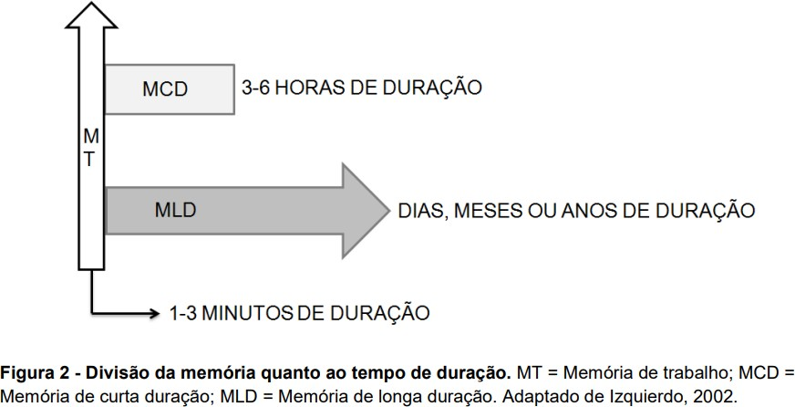
Segundo LeDoux (2012), quando aprendemos algo novo, essa informação não é armazenada imediatamente de forma permanente. Inicialmente, ela forma uma memória temporária que, com o passar do tempo, precisa ser fortalecida para se tornar uma memória de longa duração. Esse processo é chamado de consolidação da memória e depende de alterações físicas no cérebro, como a síntese de proteínas e o fortalecimento das conexões entre os neurônios.
Entretanto, a consolidação não representa a etapa final desse processo. Sempre que uma memória é acessada — por exemplo, quando revisamos um conteúdo ou nos lembramos de um acontecimento — ela volta a um estado temporariamente instável. Nesse momento, o cérebro tem a oportunidade de reforçá-la, atualizá-la ou até mesmo associá-la a novas informações. Esse fenômeno é conhecido como reconsolidação da memória.
Isso significa que nossas memórias não são registros imutáveis. Pelo contrário, elas estão em constante transformação. Cada revisão, cada nova experiência relacionada ao assunto e cada recuperação da informação contribuem para fortalecer as conexões neurais responsáveis por aquela lembrança.
Esse processo só é possível graças à plasticidade cerebral. Em outras palavras, toda vez que você revisa um conteúdo de forma ativa, não está apenas "lembrando" do que estudou, mas também tornando essa memória mais forte, mais estável e mais fácil de ser recuperada no futuro.
Plasticidade é capacidade do cérebro de se remodelar e reorganizar ao longo da vida em resposta a experiências, aprendizado e até mesmo lesões. Essa habilidade permite que os neurônios (as células nervosas do cérebro) formem novas conexões e circuitos. É como se fosse uma argila que pode ser modelada e remodelada. Essa argila está mais maleável enquanto somos crianças e vai se solidificando no decorrer de nossas vidas. Por isso crianças possuem maior facilidade em aprender uma língua do que os adultos, devido à sua maior plasticidade cerebral.
O processo de formação e conservação da memória de longa duração envolve algumas fases, são elas: aquisição, consolidação, evocação, reconsolidação/extinção.
A fase de aquisição constitui a fase em que ocorre a aprendizagem, é o primeiro estágio do processo de memorização, onde a informação é recebida e registrada. Isso envolve a percepção sensorial e a atenção. Por exemplo, quando você está assistindo a uma aula, a informação é adquirida através da audição e visão.
Em seguida inicia-se a fase denominada consolidação, processo pelo qual as memórias são estabilizadas e armazenadas no cérebro. Esse processo ocorre principalmente durante o sono e o repouso, onde as conexões neurais são fortalecidas e organizadas. É como salvar um arquivo no seu computador — se não for salvo corretamente, pode ser perdido.
Uma vez consolidada, as memórias podem ser evocadas, fase que envolve a constante retomada de uma informação previamente armazenada (MEI et al., 2011), e isto comprova que o aprendizado realmente gerou uma memória.
A memória evocada torna-se instável (IZQUIERDO, 2002), podendo ser desde alterada a totalmente deletada (nesse último caso, sendo devido à total falta de evocação da informação), e isso pode seguir por dois processos distintos: Reconsolidação ou a Extinção. No processo de reconsolidação, novas informações podem ser integradas (adicionada) ao conteúdo de uma memória, permitindo a sua modificação.
Já o processo de extinção consiste em um novo aprendizado que se sobrepõe ao aprendizado original, ou seja, uma nova memória que inibe a evocação de uma determinada memória previamente consolidada possibilitando sua substituição.
Ela é um estímulo condicionado, descrito pela primeira vez por Pavlov (1927), e está ligado diretamente ao sistema de recompensa do nosso cérebro. Se você não recompensar seu cérebro ele irá extinguir uma sequência sináptica substituindo-a por outra nova. Seria um update da informação, não uma deleção completa.
A extinção é crucial para a adaptação emocional, permitindo que indivíduos não revivam constantemente memórias dolorosas, o que poderia levar a problemas de saúde mental, como depressão e transtornos de ansiedade.
Exemplo Clássico: O experimento de Pavlov, onde cães aprendem a associar um som (estímulo condicionado) com a apresentação de comida (estímulo incondicionado) ocasionando a salivação apenas com a apresentação do som. A extinção ocorre quando o som é apresentado repetidamente, só que sem a comida, levando à diminuição da resposta de salivação até sua extinção total.
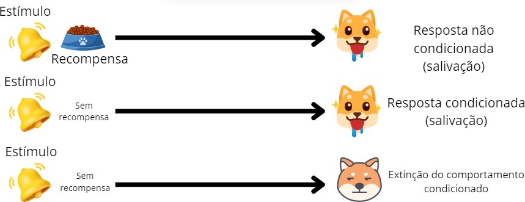
Trazendo isso para os estudos, de vez em quando é necessário que você se recompense por alguma conquista atingida. Ex: X minutos sem distrações e com foco total nos estudos você recebe Y minutos de descanso total. Essa é uma das técnicas que iremos abordar mais à frente.
Veja isso representado no esquema abaixo para melhor entendimento:
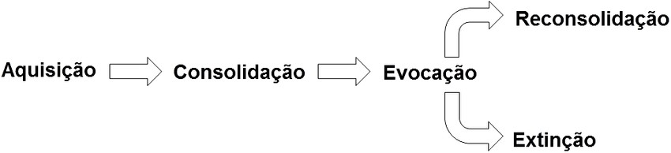
A extinção não é o esquecimento real. No esquecimento real as memórias desaparecem pela ausência prolongada de sua evocação (revisão do conteúdo), por atrofia sináptica. No corpo humano, tudo o que não é utilizado por um período X de tempo é atrofiado. Veja o exemplo de quando engessamos um braço ou uma perna. Depois de 3 meses com esses membros imobilizados eles atrofiam (diminuem de tamanho) e precisamos de reabilitação fisioterápica para que eles voltem ao tamanho original.
Com o nosso cérebro acontece a mesma coisa, pois apesar de ele não ser um músculo, ele se comporta como um em muitos aspectos. Se você não exercitar e evocar informações constantemente elas serão recicladas para que outras informações substituam o seu lugar. Daí a importância da revisão espaçada do conteúdo. Estudo sem revisão é escrever de forma fraca na areia, passou a onda uma vez e adeus conteúdo.
Estudar de forma ativa é crucial para melhorar o desempenho acadêmico. A utilização de métodos baseados em neurociência pode transformar o aprendizado em algo mais eficiente. Caso contrário você continuará estudando e armazenando as informações na MCP para que em algumas horas tudo se perca e você precise começar a estudar tudo de novo.
Nesse capítulo iremos ter que quebrar algumas coisinhas que te bloqueiam e impedem de crescer, está bem? Chamamos isso de Crenças Limitantes (grifei esse termo para que mais tarde, se você quiser pesquisar mais a fundo sobre isso, você consiga achar com mais facilidade sobre o assunto, para lhe ajudar a entender melhor).
Crenças limitantes são crenças que possuímos que nos impedem de crescer e evoluir. Já te adianto que talvez doa um pouquinho no começo, pois é necessário que olhemos para algumas sombras que temos dentro de nós e que escondemos, muitas vezes de nós mesmos, para que não tenhamos que lidar com elas, mas como uma boa reforma, é preciso que haja a quebra do velho para que o novo seja construído no lugar. Respira fundo, segura a minha mão e não solta. Tá pronto? Então vamos lá!
No livro "Mindset: A Nova Psicologia do Sucesso" de Carol S. Dweck. PHD em Stanford de psicologia, Carol afirma que a opinião que você tem de si próprio afeta profundamente a forma que você leva a sua vida.
Há 2 tipos de mindset: o fixo (MF), e o de crescimento (MC). É necessário que se entenda que o seu mindset molda a sua vida, e você só é capaz de se desenvolver quando adota a mentalidade de crescimento. Ninguém nasce com um dom para ter super habilidades em algo, ou ainda que nascesse, todas as capacidades podem ser desenvolvidas por você se você dedicar o quantitativo de horas necessárias para desenvolver essas habilidades.
No livro “Fora de série: Outliers” de Malcolm Gladwell, é falado sobre as regras das 10.000 horas, onde ele explica e comprova que para alguém se tornar um verdadeiro mestre em algo, precisa ter pelo menos 10.000 horas de prática nessa atividade. Ou seja, não é uma questão de ter o dom para algo, ou ter nascido para aquilo, é uma questão de horas de prática em algo que você tem verdadeiramente vontade de dominar. Exemplo de pessoas que atingiram essa quantidade de horas:
E todos são homenageados até hoje pelas suas conquistas, mas as pessoas esquecem que de todos, eles foram os que mais erraram.
Vamos ver agora como os erros moldaram o caminho deles:
Peguemos agora um outro exemplo famoso. Thomas Edison, o inventor da lâmpada. De acordo com registros, ele cometeu cerca de 2.774 erros diferentes antes de finalmente desenvolver um filamento de luz que funcionava de maneira eficiente em um vácuo quando a eletricidade era passada por ele sem romper ou explodir alguma coisa. Trago a você agora algumas frases famosas que ele disse em relação ao erro:
✔ "Eu não falhei. Apenas descobri 10.000 maneiras que não funcionam."
✔ "Nossa maior fraqueza está em desistir. O caminho mais certo de vencer é tentar mais uma vez."
✔ "Muitas das falhas da vida ocorrem quando as pessoas não percebem o quão perto estavam do sucesso quando desistiram."
✔ "Não é que eu seja tão inteligente, é que eu permaneço resolvendo problemas por mais tempo."
Em suma, o erro (resolução de problemas) é um componente vital da jornada para a maestria. Ele oferece lições valiosas, molda a resiliência e impulsiona a inovação. Essas figuras exemplificam como enfrentar e aprender com os erros pode levar ao sucesso extraordinário.
Algumas pessoas não entendem e não acreditam que podem se desenvolver, e é justamente essa descrença na possibilidade de se desenvolverem que às impedem de atingir outros patamares evolutivos. Henry Ford, fundador da Ford Motor Company uma vez disse: “Se você acreditar que não consegue fazer uma coisa ou se acreditar que consegue, das duas formas você estará certo.”
Agora vem a parte que talvez doa um pouquinho. Se você quiser saber qual é o seu mindset, ou mentalidade, basta apenas você observar como você reage às oportunidades de desenvolvimento que a vida lhe apresenta.
Pessoas com o mindset fixo (PMF) tendem a repetirem frases parecidas: Eu já sei tudo que preciso. Eu não nasci com esse dom. Eu não sou bom nisso. Se for difícil, eu desisto. Eu não gosto de errar. Eu não tenho tempo. Eu não gosto que me corrijam. Eu não gosto de resolver problemas. Não gosto de experimentar coisas novas. Sobre isso eu já sei tudo. Eu nunca vou conseguir fazer igual o fulano. Tudo que eu faço dá errado.
Já as pessoas com o mindset de crescimento (PMC) costumam dizer: Eu gosto de aprender. Eu posso aprender qualquer coisa, desde que me esforce o bastante. Se eu errar, tento de novo. Eu adoro novos desafios. Eu adoro resolver problemas, aprendo sempre com eles, pois é na crise que a gente cresce. Eu não sei fazer ainda, mas eu dou um jeito. Eu gosto de experimentar e tentar coisas novas. Se o fulano fez eu também consigo, é só eu treinar o bastante.
As PMF buscam aprovação (chamamos de motivação extrínseca) e as de PMC, autoaprimoramento contínuo (motivação intrínseca), não ser melhores que ninguém, apenas melhores do que o eu delas do passado. Falaremos dos tipos de motivação mais à frente.
PMF acreditam que o fracasso deve ser evitado a qualquer custo, que ele é apenas um atraso no processo de evolução e que quando ele ocorre é uma situação catastrófica regada a muita autopunição, julgamento e culpa, e normalmente depois disso elas desistem. Já para as PMC abraçam o fracasso como algo natural e já esperado, que ensina e faz crescer.
Um exemplo para ilustrar bem isso seria a seguinte situação. Temos 2 pessoas, Pedro e João e os dois estão testando uma receita que eles viram na internet. Pedro apresenta a receita para sua família e recebe críticas construtivas de todos os que experimentaram como: adicionar um pouco mais de sal, ficar mais um tempo no forno pois tinha ficado um pouco cru demais etc. Pedro sai arrasado do almoço e para de falar por dias com as pessoas que o criticaram e nunca mais tenta cozinhar nada acreditando que "não dava para isso" e que ele não tem o talento necessário para ser bom na cozinha.
Agora temos João, mesmos problemas que Pedro teve, João teve também, porém João foi almoçar com uma cadernetinha e uma caneta na mão, e perguntou a opinião sincera das pessoas que estavam experimentando, e todas as críticas (feedback) que foram repassadas a ele, João anotou e agradeceu a todos pela sinceridade. Passou-se uma semana, e depois de muito estudar e analisar os pontos fracos e fortes da receita, João fez as devidas alterações e convocou novamente as mesmas pessoas para experimentarem a receita novamente, e agora João tinha acertado em quase tudo, mas não conseguiu novamente acertar o ponto do sal. Mas dessa vez João foi muito elogiado e apenas criticado pelo pequeno detalhe do sal. Na semana seguinte João convocou pela terceira vez seus familiares para o almoço e dessa vez ele foi perfeito em tudo e foi aplaudido por todos, sendo até requisitado que ensinasse a todos como ele tinha feito algo tão gostoso. João acredita que o esforço e a persistência são muito mais importantes que o talento.
Observando essas duas situações fica bem claro qual dos dois rapazes possui um MF e qual tem o MC não é?
A SUA MENTALIDADE FOI DEFINIDA DE ACORDO COM A SUA CRIAÇÃO, A SUA EDUCAÇÃO E AS SUAS EXPERIÊNCIAS DE VIDA, MAS ELA NÃO É IMUTÁVEL.
A boa notícia é que não importa se você foi educado por uma família que possui MF, você a partir de agora consegue alterar isso, pois é algo totalmente possível e atingível para qualquer um que queira verdadeiramente essa mudança em sua vida, e o segredo é estar sempre aberto a novos aprendizados. Ler esse livro por exemplo já é por si só uma prova de que essa mudança já está acontecendo. Então calma pequeno gafanhoto que você já está indo na direção certa. Tenha fé, que isso juntamente com trabalho duro, você verá que o céu é o limite para você. Calma que vai dar certo, só não pare no meio do caminho e confie em si mesmo.
Como dizia aquela grande pensadora contemporânea: "Continue a nadar, continue a nadar, continue a nadar." - Dory do filme procurando Nemo.
Puxando o gancho da frase acima, eu te pergunto, o que te faz “continuar a nadar”? O que te faz acordar de manhã todos os dias para estudar ou trabalhar? É sobre isso que iremos falar agora.
Segundo o especialista Marzano (2003), Motivação é o desejo e o ímpeto de começar e manter um determinado comportamento.
É uma energia que te faz ir buscar algo. Se você está confortável deitado na sua cama e não está com sede você não irá se levantar para buscar um copo d’água, ainda que alguém te mande fazer isso por você mesmo. Porém se você estiver com a boca muito seca, apesar de você estar na sua zona de conforto, estagnado e imóvel, esse desconforto se tornará tão grande que lhe fará sair do seu conforto da cama, entrar em movimento ativo e ir buscar o que resolverá o seu problema. Logo a motivação também está ligada ao nível de desconforto que sentimos que nos levará a entrarmos em movimento para transformar algo. É como o próprio nome já diz: MOTIVAÇÃO – MOTIVO para a AÇÃO.
Existem 2 tipos de motivação: a Intrínseca e a Extrínseca.
A motivação intrínseca vem de dentro da pessoa. É quando você faz algo porque acha a atividade em si interessante, prazerosa ou muito necessária (mesmo não sendo prazerosa) e não precisa de nada nem ninguém para fazer com que você tenha vontade de ir por si só realizar aquela atividade. Por exemplo:
Por exemplo, um aluno que adora resolver problemas de matemática por diversão e desafio está mais propenso a perseverar diante de dificuldades da vida em geral. Ele vê erros como oportunidades de aprendizado e se torna resiliente.
Quando um aluno tem motivação intrínseca, ele está impulsionado por um interesse genuíno no aprendizado, achando prazer no ato de estudar e crescer. Isso se alinha com um mindset de crescimento, onde se acredita que habilidades e inteligência podem ser desenvolvidas com esforço e prática.
Já a motivação extrínseca vem de fora. É quando você faz algo para ganhar recompensas de outra pessoa ou mesmo evitar punições e pode ser mais comum entre aqueles com um mindset fixo, que acreditam que suas habilidades são inatas e imutáveis. Por exemplo:
Obs: Importante frisar que não necessariamente por você ter alguma motivação extrínseca, você possui mindset fixo ok? Há casos e casos. No ser humano nada é uma regra sem exceção.
Para ser um estudante de alta performance é preciso juntar a motivação intrínseca com o mindset de crescimento, para que dessa forma seja cultivado alguns hábitos como:
Uma excelente forma de se motivar é ter um objetivo claro e atingível em sua vida. Se pergunte: Onde eu me vejo daqui a 5 anos? E 10 anos? E depois se pergunte: Quais os passos preciso dar para chegar até lá? O que preciso aprender e desenvolver de habilidades para conseguir atingir esse objetivo? Anote suas respostas e você terá um bom norte para basear suas escolhas de caminho a trilhar.
Emoções fortes como dor, raiva e vergonha são os melhores motivadores que possuímos para gerar combustível para a mudança. O medo de sentir dor é um excelente motivador para se começar ou parar de praticar uma atividade e um ótimo pretexto para mudança de hábito. Peguemos esse estudo de caso de uma pessoa que quase morre em um acidente de carro por ter bebido e dirigido.
Essa pessoa tinha o costume de beber com os amigos e depois voltar para casa bêbado dirigindo o seu carro. Sua família sempre o advertia sobre esse mal hábito e que um dia poderia dar muito errado, mas ele quase sempre ignorava os conselhos, somente não bebia quando alguém fazia ele prometer que não o faria (olha o motivador extrínseco aí). Uma bela noite ele saiu com os amigos e acabou com o carro em uma arvore que caiu por cima dos fios de eletricidade deixando o bairro quase inteiro sem energia e posteriormente sendo preso por dirigir embriagado.
Ao sair da cadeia e ter gastado uma pequena fortuna com advogados e com o conserto do seu carro, seus hábitos mudaram drasticamente. Parou de sair com aquelas amizades tóxicas e parou totalmente com o hábito de beber, entendendo que aquilo não era bom para ele nem para ninguém. A dor da lembrança (e dos ossos quebrados), o medo de passar por aquilo de novo, a vergonha do julgamento de todos da sua família e trabalho e a raiva dos amigos por sempre incentivarem ele a fazer o errado foram os motivadores dele para que hoje ele entendesse que precisaria de uma correção de curso na vida para que ele.... bem... continuasse vivo.
Exatamente a mesma coisa ocorre com os estudantes que não gostam de estudar e que possuem apenas as motivações extrínsecas como motor para a realização de seus deveres. Peguemos outro estudo de caso:
Pedrinho sempre detestou estudar, especialmente inglês. Sempre que era a aula de inglês ele ou faltava ou dormia nas aulas, pois nunca entendia a importância de aprender aquilo se nunca iria viajar para fora, e se um dia fosse, iria com um guia que iria falar tudo por ele.
Pedrinho sempre ouvia os pais falando a respeito da importância do inglês, que não era somente para viagens, que para se conseguir um ótimo emprego hoje em dia era preciso ter o inglês pelo menos básico para começar a concorrer às vagas, e que existiam diversas ferramentas que ele precisaria usar que estariam todas em inglês e etc. Colocaram ele, forçadamente em uma escolinha de inglês com 13 anos que passou 2 anos estudando e não aprendeu nada, pois não se interessava em estudar e mais uma vez desperdiçou a chance de aprender, pois bem. Pedrinho cresceu e aos 18 anos começou a procurar emprego.
Um belo dia se deparou com uma vaga de emprego na área que ele sempre sonhava, e a vaga precisava de alguém que soubesse pelo menos o básico de inglês, e mesmo não sabendo Pedrinho foi para a entrevista. A entrevistadora, que não estava em um bom dia, olhou para o currículo dele e viu que ele tinha 2 anos de inglês e como uma boa entrevistadora que era, começou a falar em inglês com ele para testá-lo, e o resultado não poderia ser outro, Pedrinho não conseguiu responder nada.
A entrevistadora vendo que o candidato, visivelmente havia mentido no currículo, questionou ele de forma bem dura sobre o motivo de ele ter feito aquilo e deu uma lição de moral e ética a Pedrinho, que saiu da sala segurando o choro e com um nó na garganta depois dessa humilhação que passou.
Depois de mais alguns anos, e após várias recusas de emprego, trabalhando apenas por dinheiro em um local que não lhe dava satisfação nenhuma, e mais algumas humilhações, Pedrinho finalmente entendeu o que deveria fazer e resolveu procurar um curso de inglês e finalmente aprender esse idioma tão necessário. Mas ele já estava com mais de 30 anos de idade e havia muitas outras atividades paralelas que deveria realizar junto com suas aulas, como cuidar dos filhos, da esposa, casa e do seu trabalho em que se sentia muito desmotivado pois não conseguia empregos melhores devido a sua falta de requisitos mínimos para concorrer às vagas.
Depois de 4 anos, Pedrinho agora com 34 anos, conseguiu terminar seu inglês, estava fluente e pronto para conseguir o emprego dos seus sonhos, correu atrás e conseguiu. Parabéns Pedrinho! Você finalmente conseguiu, somente com 21 anos de atraso (mais de duas décadas), mas conseguiu.
Não desmerecendo o esforço de Pedrinho, o que ele conquistou foi muito bom e grande, mas... não poderia ter conseguido isso antes? Será que o mindset dele na época, se estivesse bem calibrado, não o teria hoje aos 34 anos, lhe levado à patamares muito mais altos? Será que se naquela época Pedrinho tivesse a motivação correta para aprender inglês, ele não estaria muito melhor de vida hoje? São aspectos que precisamos ter em mente ao dizer os nossos SIMs para umas coisas e os NÃOs para outras. O medo de não obtermos sucesso em nossas vidas é um ótimo catalisador para nossa transformação interior.
Reflita: Você tem objetivos bem traçados para a sua carreira e vida como um todo? E se sim, pense com muita calma agora: os seus SIMs estão bem alinhados com esses objetivos? Será que o seu Freefire, ou o seu football, ou os seus Netflix, Tiktoks ou até mesmo o seu sono em horários que você não deveria estar dormindo, não estão ocupando lugares importantes demais no seu dia? Quantos SIMs você deu a essas atividades triviais e quantos NÃOs foram precisos dar para as atividades que realmente lhe ajudariam a atingir seus objetivos?
Com isso não digo que essas atividades não devem ter lugar em momento nenhum no seu dia, pois a higiene mental é algo tão importante quanto o trabalho e o estudo (lembra do último pilar da aprendizagem? Se não lembra, corre lá no Capítulo: “O que é aprender?” rapidinho e verifique qual é. Estou dizendo que para tudo existe hora e lugar, e isso já será uma outra técnica de estudo ativo, a gestão do seu tempo.
Você se lembra que já falamos sobre isso no começo? Sobre um “sim” ser infinitos “nãos”? Então talvez esteja na hora de uma pausa estratégica!
Até aqui já vimos muitos conceitos e ideias bem interessantes que para alguns podem parecer um pouco familiares, mas para outros podem ser completamente novas e revolucionárias para suas vidas. Então, como já vimos a importância da revisão, vamos agora dar uma pausa no avanço do assunto para fazermos isso. Esse livro não é um livrinho de historinhas nem tão pouco corrida de cavalo. É necessário digerir corretamente as informações nele contidas e transmitidas para o seu cérebro (como já falamos).
Solicito ao caro leitor que se caso estiver fazendo anotações sobre os assuntos abordados, que agora faça a organização delas e as revise com cautela. Se quiser pesquisar mais a fundo sobre algum assunto que lhe chamou a atenção até aqui, esse é o momento ideal. Tire um dia só para fazer essa revisão e pesquisa aprofundada para que você fique ainda mais por dentro dos assuntos.
E aos leitores que até agora não fizeram nenhuma anotação, agora seria um bom momento para começar a fazer. Aproveite que não foram tantas páginas assim e comece retornando para o conceito de aprendizagem até chegar aqui, vá explicando para você mesmo os conceitos que você for lendo e veja como está a sua explicação (isso em si já é uma das técnicas que iremos aprender mais a fundo mais tarde e que estou adiantando aqui para os mais ansiosos, se chama Técnica de Feynman).
Quando você explica algo para você mesmo logo depois de aprender, é uma ótima forma de verificar o seu nível de entendimento sobre o assunto, pois se você não consegue explicar algo de forma simples, é por que você não entendeu realmente sobre o assunto e então precisa voltar e estudar novamente.
Pegue por exemplo a parte que falamos dos pilares do aprendizado, você lembra quantos são? Quais são? Consegue explicar cada um deles de forma simples? Se a resposta for “não” para alguma dessas perguntas, então realmente você está precisando fazer uma revisão sobre os assuntos abordados até agora.
Já estamos começando a pegar o ritmo do estudo ativo, não é? Você está começando a modificar seus hábitos de estudo e a aplicar técnicas melhores de aprendizado. E foram somente algumas páginas até aqui, imagina como você vai estar no final! Vamos lá, mantenha o ritmo e não desanime você já venceu!
Não é para você COPIAR o livro inteiro até aqui, é para você ANOTAR, tem uma diferença imensa entre essas duas coisas (temos aí um outro assunto interessante que iremos abordar mais à frente e que você pode agora começar a pesquisar no Youtube, se quiser: “a diferença entre copiar e anotar.” Pesquise 😉). O próprio ato de pesquisar e estudar assuntos antes da aula propriamente dita como uma forma de preparação do terreno para o novo conhecimento ir se acomodando na mente, já é uma outra técnica que iremos abordar em um momento mais oportuno.
Com tudo isso que já abordamos, é fácil perceber que o papel do estudante é muito mais de protagonista do que de um mero espectador. Daí entra o estudo ativo. Mas o que é isso?
O estudo ativo é uma abordagem de aprendizagem que transforma o estudante em protagonista, exigindo que ele interaja ativamente com o conteúdo em vez de apenas recebê-lo passivamente. Ele propõe que o aluno atue além da leitura passiva, e que ele realmente contribua para uma compreensão real e duradoura dos conteúdos, resultando na melhora do rendimento nos estudos. As principais características do estudo ativo são descritas por UNIFOA (2024), que enumera 4 principais. São elas:
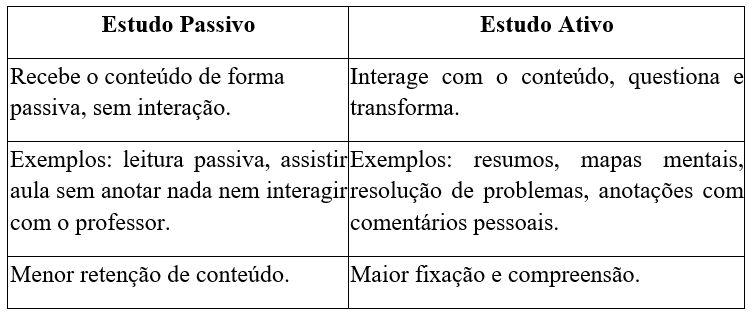
Além disso, o estudo ativo aumenta o engajamento e a motivação, tornando o aprendizado mais significativo e menos cansativo. Ao transformar a informação recebida em produção própria — seja escrevendo, desenhando ou discutindo — o aluno desenvolve autonomia, senso crítico e capacidade de resolver problemas, habilidades essenciais tanto para o ambiente acadêmico quanto para a vida profissional, como análise e síntese de informações.
Agora que já estamos com o terreno bem preparado, iremos começar com as práticas propriamente dito.
A preparação para a aula começa antes mesmo de entrar na sala. Ler previamente o material, pesquisar rapidamente sobre o tema e anotar dúvidas são atitudes que aumentam a participação e permitem que o estudante faça perguntas inteligentes e pertinentes. Dessa forma, o aluno chega mais preparado, interage melhor com o professor e retém mais informações.
A pré-aula consiste em se antecipar ao conteúdo que será trabalhado. Isso pode ser feito de algumas formas: perguntando ao professor qual tema será abordado na próxima aula ou seguindo o roteiro planejado. Não é necessário aprofundar demais nesse momento, mas sim criar uma primeira familiaridade com os conceitos. Essa preparação evita que você seja pego de surpresa e lhe permite acompanhar a explicação com mais facilidade.
A pré-aula também ajuda a ativar conhecimentos prévios. Quando você lê ou pesquisa antes, seu cérebro já começa a criar conexões com o que sabe. Assim, durante a aula, você consegue interagir mais com o professor e fazer perguntas mais inteligentes e pertinentes, bem como absorver melhor o conteúdo. Isso aumenta o seu interesse e a motivação, porque você deixa de ser um espectador passivo e passa a ser um participante ativo na aula já desde o começo.
É altamente recomendado que você anote suas dúvidas durante a pré-aula. Ao estudar em casa, é natural encontrar pontos de dificuldade e que ainda não fazem muito sentido para você. Essas dúvidas devem ser levadas para a sala de aula, onde o professor atua como mediador da aprendizagem. Dessa forma, a aula se torna um espaço de esclarecimento e aprofundamento, e não apenas de exposição.
Por isso essa técnica é como se fosse um aquecimento antes de uma corrida. Ela prepara o corpo — ou melhor, o cérebro — para o esforço que virá. Sem aquecimento, você corre o risco de se cansar rápido e não aproveitar o percurso. Com a pré-aula, você entra na sala já em movimento, pronto para interagir, compreender e aprender de forma mais ativa.
O esquema de aprendizado nas escolas, especialmente as públicas, se baseia nesse padrão: TEXTO ➔ CADERNO ➔ CÉREBRO (talvez)
E já vimos que não funciona assim o aprendizado. Agora lhe mostrarei qual é o modelo ideal:
TEXTO (Aquisição) ➔ CÉREBRO (Consolidação) ➔ CADERNO (Consolidação) ➔ REVISÃO (Evocação)
A anotação no caderno DEPOIS do processamento cerebral é crucial para a consolidação e evocação da memória. Vamos analisar o porquê:
TEXTO → CÉREBRO (Aquisição e Consolidação inicial): Neste estágio, você lê o texto (aquisição). O cérebro processa a informação, tentando criar significado e conectar com conhecimentos prévios. A consolidação inicial começa aqui – o cérebro está organizando e fortalecendo as novas memórias que se somam com as que já foram criadas sobre o assunto em questão.
CÉREBRO → CADERNO (Anotação e Consolidação): Anotar o que você entendeu força uma segunda etapa de processamento. Você precisa resumir, selecionar informações importantes e codificá-las de uma nova forma pessoal (escrita). Esse ato de resumo e reescrita reforça a consolidação da memória, tornando-a mais durável e acessível de evocá-la posteriormente. É como se você estivesse "repassando" a informação para o cérebro, consolidando-a ainda mais.
REVISÃO (Extinção e Reconsolidação): Repetir a revisão em intervalos regulares (espaçamento) melhora a retenção a longo prazo. A revisão regular ajuda a evitar a extinção (perda gradual da memória) fazendo que a MCP transfira as informações para a MLP.
A anotação é uma das ferramentas mais importantes do estudo ativo, mas muitos alunos ainda confundem o ato de anotar com simplesmente copiar o que está escrito na lousa ou no livro. Copiar é uma atividade mecânica, que não exige reflexão nem compreensão tornando aluno o famoso “aluno xérox”. Já anotar significa passar a informação pelo cérebro antes de registrá-la no papel, traduzindo o conteúdo com as próprias palavras e organizando-o de forma lógica. Essa diferença é fundamental, porque enquanto a cópia apenas reproduz, a anotação exige raciocínio, interpretação e síntese, tornando o aprendizado muito mais efetivo e significativo.
O aluno xerox, copia tudo da aula, transcreve cada linha do livro ou da lousa, mas no fundo não entende nada. Depois, passa horas relendo como se fosse um mantra. Resultado? Uma falsa sensação de esforço e quase nenhum aprendizado real.
“Leitura sem reflexão é como tentar aprender música só olhando a partitura sem nunca tocar o instrumento.”
Na escola, é fácil saber o que precisa ser anotado: o professor já indica os conteúdos que vão cair na prova, e isso guia o que você escreve no caderno. Mas na vida real não existe prova dizendo o que é importante. Ninguém avisa quais informações você vai precisar no futuro, e qualquer detalhe pode se tornar útil em algum momento. Desenvolver um jeito próprio de anotar, que não dependa de regras fixas, mas sim da sua percepção de relevância, é extremamente importante para você nunca esquecer de uma informação que precisa ser posteriormente evocada e reconsolidada.
Anotar significa traduzir o conhecimento para a sua linguagem pessoal. É como se você estivesse explicando algo que você aprendeu para um amigo: você não repete palavra por palavra, mas reformula, simplifica, cria exemplos e usa termos que fazem sentido para você. Essa prática ativa o pensamento crítico e garante que, ao revisar depois, você compreenda o que escreveu.
Outro aspecto essencial da anotação é a organização lógica. Não basta escrever frases soltas, é preciso estruturar os conceitos em sequência, separar tópicos, destacar ideias principais e relacionar informações. Uma anotação bem feita é como um mapa: mostra o caminho do raciocínio e ajuda você a se orientar quando revisitar o conteúdo.
Tenha em mente uma coisa: Não tente anotar tudo! O excesso de informação atrapalha mais do que ajuda. Foque no essencial: nomes, conceitos-chave, datas ou frases que resumem a ideia. Pense sempre que sua anotação deve ser um lembrete para o “você do futuro”, e não uma cópia literal do que foi dito ou lido.
Agora, uma dúvida muito frequente que surge é: melhor anotar escrevendo ou digitando? Muitos estudos indicam que o melhor mesmo é você escrever da forma antiga, sem digitação.
O pesquisador (Marano et al., 2025, p. 5) afirma que a escrita manual e a digitação ativam mecanismos cerebrais diferentes. A escrita à mão envolve mais intensamente o córtex sensório-motor, áreas visuais e centros de linguagem, pois exige integração entre visão, tato e planejamento motor. Já a digitação ativa principalmente regiões motoras ligadas a movimentos repetitivos dos dedos e ao processamento visual, com menor participação da memória e da linguagem. Dentro da escrita manual, a cursiva é mais fluida e contínua, engajando circuitos neurais mais amplos, especialmente o córtex motor e o cerebelo, o que favorece a retenção da memória e o engajamento cognitivo.
A escrita em letras de forma, por outro lado, demanda planejamento motor mais discreto e coordenação visuoespacial diferente. Estudos com EEG (eletroencefalograma) mostram que a escrita cursiva recruta redes neurais mais extensas do que a escrita em blocos, trazendo implicações importantes para a educação e o desenvolvimento cognitivo.
Existem diferentes formas de anotar. A anotação à mão estimula a coordenação motora fina, favorece a memorização e permite o uso de desenhos e esquemas visuais. Já a anotação digitada oferece rapidez, flexibilidade para reorganizar tópicos e facilidade para inserir imagens, links e cores. Ambas têm valor, e muitos estudantes combinam as duas: escrevem à mão durante a aula e depois digitam em casa, reorganizando e enriquecendo o material.
Um exemplo prático para ajudar a visualizar isso: imagine que o professor está explicando sobre células. Copiar seria escrever exatamente como ele fala: “A célula é a unidade básica da vida, existem células procariontes e eucariontes…”. Já anotar seria registrar assim: “Célula = unidade da vida. Tipos: procarionte (sem núcleo), eucarionte (com núcleo).” Perceba que a anotação é mais curta, mais rápida e usa símbolos e palavras-chave, mas mantém o essencial.
A anotação em tablets com caneta S Pen representa uma evolução natural do hábito de escrever à mão, trazendo para o ambiente digital todas as vantagens da tecnologia sem perder a sensação de escrever no papel. O estudante continua tendo a experiência tátil da escrita cursiva ou em bastão, mas agora com recursos adicionais que ampliam a organização e a interatividade. A S Pen, por exemplo, possui alta sensibilidade à pressão, o que permite destacar palavras, sublinhar trechos importantes ou desenhar diagramas com precisão. Essa combinação de escrita manual com ferramentas digitais transforma o ato de anotar em uma prática muito mais dinâmica.
Ao utilizar o tablet, o aluno pode reorganizar páginas, mover trechos de texto e criar seções sem precisar reescrever tudo, algo impossível no caderno físico. Além disso, é possível integrar diferentes mídias às anotações: imagens, links, áudios e até vídeos podem ser inseridos diretamente no material, tornando-o multimídia e enriquecendo a compreensão. Essa flexibilidade facilita também a revisão, já que o estudante pode buscar rapidamente um conceito dentro das anotações, corrigir erros sem uso de corretivo e reorganizar tópicos com poucos toques na tela. Então para quem consegue comprar um item desses, é bastante interessante. Fica a dica😉.
Ao longo dos anos, diferentes técnicas de anotação foram desenvolvidas e se tornaram populares entre estudantes e profissionais. Entre elas, o método Cornell é um dos mais conhecidos. Criado na Universidade de Cornell nos anos 1950, ele consiste em dividir a página em três partes: uma coluna larga para anotações principais, uma coluna estreita para palavras-chave e perguntas, e um espaço inferior para o resumo. Essa estrutura obriga o aluno a refletir sobre o conteúdo, destacar pontos essenciais e sintetizar ao final, tornando a revisão muito mais concisa, bem como prática de rever e resgatar informações no futuro.
Logo no topo da folha está localizado o cabeçalho com o nome do assunto, data e outras informações que você julgar necessárias conter para você se localizar quando for procurar pelo assunto.
Na área de notas, localizada à direita da folha, o estudante registra as informações principais durante a aula ou leitura, como definições, conceitos, exemplos e explicações. Essa seção funciona como o corpo da anotação, onde se concentra o conteúdo bruto que será trabalhado posteriormente.
À esquerda da folha, encontra-se a coluna de palavras-chave, onde são anotadas perguntas, termos importantes ou tópicos que ajudam a ativar a memória e a revisar o conteúdo. Essa parte é usada para estimular o pensamento crítico e facilitar a autoavaliação, permitindo que o estudante tente lembrar o conteúdo apenas com base nas pistas.
Por fim, na parte inferior da folha, está a área de resumo, onde o estudante sintetiza, com suas próprias palavras, o que foi aprendido. Essa etapa é essencial para consolidar o conhecimento, pois exige que o aluno reflita sobre o conteúdo e o reorganize mentalmente.
Caso você ache necessário acrescentar um desenho ou uma figura para ilustrar algum conceito, é altamente recomendado. Você pode fazer um desenho que represente o que foi explicado ou até mesmo um mnemônico como um acrônimo que você criou da sua cabeça para lembrar de alguma sequência de informações. Eis aqui um exemplo de como fica:
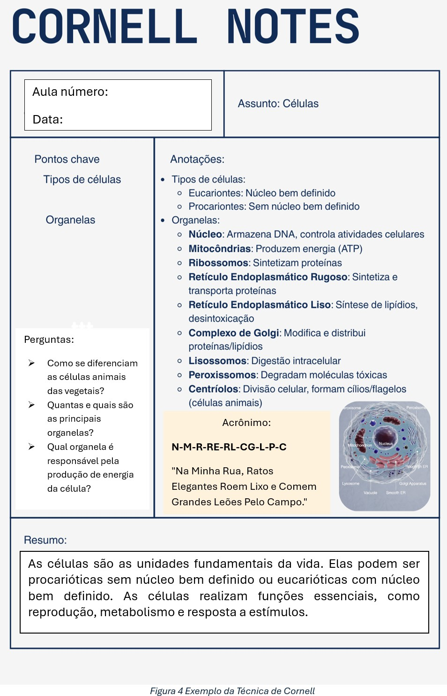
A anotação por tópicos hierárquicos é uma técnica bastante tradicional, mas que, quando aplicada corretamente, pode ser extremamente eficiente para organizar o conteúdo estudado. Ela consiste em estruturar as informações em níveis de importância, criando uma espécie de árvore lógica em que cada ideia principal se desdobra em subtópicos e detalhes. O estudante começa registrando o tema central, que funciona como o título, e logo abaixo coloca os pontos mais relevantes relacionados a ele. Esses pontos são desenvolvidos em subtópicos, que podem conter explicações, exemplos ou complementos. Assim, cada nível da hierarquia vai aprofundando o assunto sem perder a clareza da organização, sempre de forma sucinta e resumida sem deixar as frases muito longas, mantenha a preferência por conceitos e palavras chaves.
Esse método é útil porque permite visualizar rapidamente a relação entre conceitos. Em vez de escrever longos parágrafos, o estudante cria uma estrutura clara e objetiva, em que é fácil identificar o que é essencial e o que é secundário.
Outro benefício é que esse tipo de anotação favorece a memorização, já que o cérebro tende a compreender melhor informações que estão estruturadas em blocos e relações lógicas.
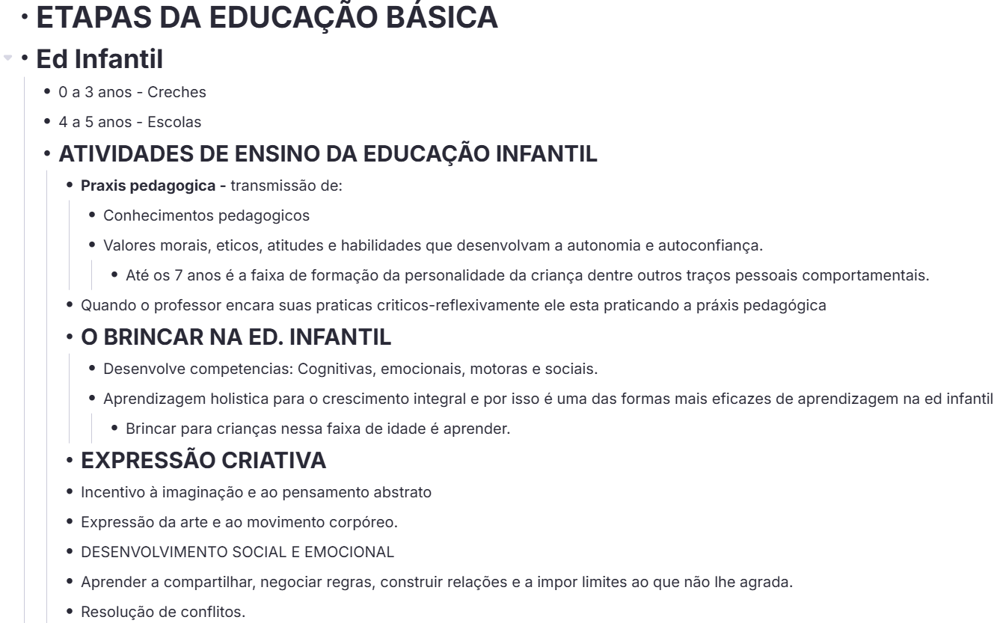
Abaixo irei dar como exemplo uma das minhas anotações que eu mesmo fiz quando estava estudando a matéria de pedagogia na minha pós graduação em Neuroeducação (obs: o nome desse software que eu utilizei é “RemNote” uma variação do “Notion”, outro programa de anotação. Eles são bastante conhecidos no meio acadêmico de estudante de alto desempenho, vale a pena você dar uma pesquisada neles):
“Perceba que os tópicos vão sendo destrinchados conforme os conceitos vão sendo aprofundados. Dessa forma é muito mais fácil localizar a informação.
Compare agora com o mesmo texto disposto em forma de texto corrido e veja a diferença na dificuldade de localizar uma informação específica:
“A Educação Básica é composta por diferentes etapas, sendo a Educação Infantil a primeira delas. Essa fase se divide em dois grupos: crianças de 0 a 3 anos, que frequentam creches, e crianças de 4 a 5 anos, que estudam em escolas. As atividades de ensino na Educação Infantil envolvem uma práxis pedagógica voltada para a transmissão de conhecimentos, valores morais e éticos, atitudes e habilidades que promovem a autonomia e a autoconfiança. Até os sete anos, essa fase é considerada essencial para a formação da personalidade e de outros traços comportamentais da criança. Quando o professor conduz suas práticas de forma crítica e reflexiva, ele está exercendo a verdadeira práxis pedagógica. O brincar é uma atividade central na Educação Infantil, pois contribui para o desenvolvimento de competências cognitivas, emocionais, motoras e sociais. Trata-se de uma aprendizagem holística que favorece o crescimento integral da criança, sendo uma das formas mais eficazes de aprendizado nessa faixa etária. Para crianças pequenas, brincar é sinônimo de aprender. A expressão criativa também desempenha papel fundamental, estimulando a imaginação e o pensamento abstrato, além de permitir a manifestação artística e o movimento corporal. O desenvolvimento social e emocional é promovido por meio de experiências que ensinam a compartilhar, negociar regras, construir relações e estabelecer limites diante do que não lhes agrada. Essas vivências também favorecem a resolução de conflitos, preparando a criança para interações sociais mais saudáveis e conscientes.”
Viu a diferença? Comece a anotar assim e perceba por si só a mágica que isso vai fazer na sua vida acadêmica.
Mapa mental é uma técnica de organização visual que ajuda a estruturar ideias de forma clara e criativa. Ele parte de um conceito central e se expande em ramificações, permitindo que o estudante ou profissional veja conexões entre informações de maneira rápida e intuitiva.
Um mapa mental funciona como um “desenho do pensamento”: no centro, coloca-se o tema principal (por exemplo, “Fotossíntese” ou “Revolução Francesa”), e a partir dele surgem ramificações com subtópicos. Cada ramificação pode conter palavras-chave, imagens, símbolos ou cores que facilitam a memorização. Essa estrutura não linear é muito mais próxima da forma como o cérebro organiza informações, já que nossa mente não pensa em listas, mas em associações.
Do ponto de vista pedagógico, os mapas mentais são ferramentas excelentes para aprendizagem ativa, pois obrigam o estudante a sintetizar o conteúdo em palavras-chave e conexões, em vez de copiar textos longos. Isso aumenta a retenção da memória e melhora a compreensão, pois utiliza o hemisfério direito do cérebro, responsável pela criatividade, pensamento abstrato e de criação de imagens.
Tony Buzan foi o psicólogo e escritor britânico que sistematizou os mapas mentais, transformando-os em uma técnica mundialmente conhecida para organizar ideias e estimular a memória. Ele percebeu que o pensamento humano não ocorre de maneira linear, mas sim por meio de associações, e que listas tradicionais ou textos corridos não refletiam esse processo natural.
Sua proposta era simples, mas revolucionária: ao usar símbolos, cores e conexões, o cérebro é estimulado de maneira mais completa, envolvendo tanto a lógica quanto a criatividade. Essa técnica, segundo Buzan, libera o potencial da mente e facilita a memorização, o planejamento e a tomada de decisões. Ele publicou dezenas de livros sobre memória, leitura dinâmica, criatividade e inteligência, com destaque para The Mind Map Book e How to Mind Map, que se tornaram referências internacionais.
Aqui vai como criar um mapa mental bem legal:
Aqui estão alguns exemplos de mapas mentais ilustrando bem esses conceitos:
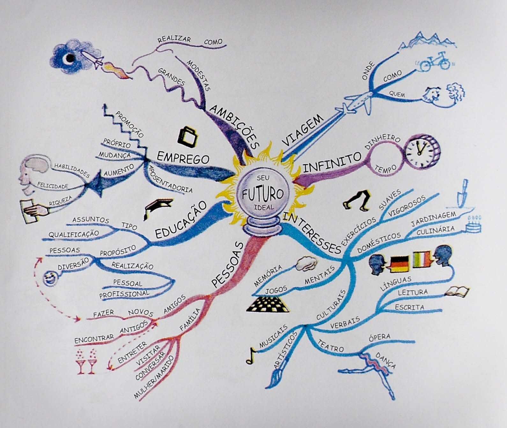
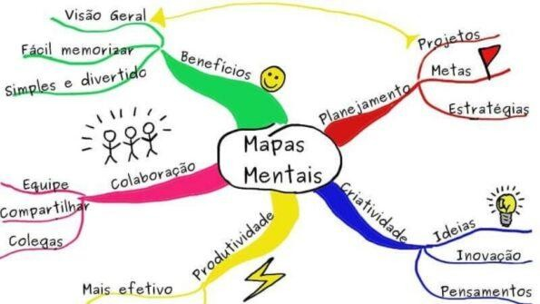
A leitura ativa é uma forma de transformar o ato de ler em um processo de estudo mais profundo e produtivo. Em vez de apenas passar os olhos pelo texto, o leitor se envolve de maneira consciente e interativa. O primeiro passo é compreender que ler e estudar não são a mesma coisa: ler é absorver informações de forma passiva, enquanto estudar exige que você questione, relacione e aplique o que está sendo lido.
No estudo você precisa conversar com o texto. Essa história de que não se escreve em livros é furada, não vai por aí não! A verdade é que essa “conversa” com o livro é um bate-e-volta que precisa acontecer até a última página do livro.
Essa conversa pode acontecer por meio de algumas técnicas que fazem o cérebro participar ativamente da leitura. Assim, ele entende que aquele conteúdo é importante e não deve ser tratado como uma simples historinha que será esquecida depois.
Leitura preparatória: Antes mesmo de iniciar a leitura do capítulo, passe o olho página por página tentando extrair palavras-chave até a última página do capítulo. Dessa forma você já mostra ao cérebro qual entendimento você precisará ter quando o capítulo for finalizado antes mesmo de você começá-lo.
Entenda como se você precisasse chegar de um ponto A ao ponto D, e você antes de sair, abrisse o mapa e fosse percorrendo mentalmente o caminho perpassando por todos os pontos, A, B e C até chegar ao seu destino. Dessa forma você consegue remover um pouco da ansiedade e se preparar para possíveis percalços que você poderia encontrar pelo caminho. É como uma forma de dizer ao seu cérebro: Olha é isso aqui que a gente vai ter que aprender, te prepara.
Faça perguntas: durante a leitura, faça perguntas sobre o que você acabou de ler, isso mantém a mente engajada e direciona a atenção para encontrar respostas no texto ou fora dele em futuras pesquisas para maior aprofundamento do tema. Essas perguntas devem ser escritas de preferência no parágrafo onde elas foram inspiradas, ou próximo dele.
Grifar e anotar as ideias principais: Ao destacar trechos e escrever comentários, você reforça a compreensão e facilita revisões futuras.
Ter conhecimentos prévios ajuda a dar sentido ao aprendizado, pois cria conexões entre o novo e o que já está consolidado na memória. Então, seja alguém que busca constantemente por conhecimentos aleatórios sobre vários assuntos, pois nunca se sabe quando você poderá utilizá-lo. Saiba um pouco sobre tudo.
Não marque tudo na primeira passada. Faça uma leitura inicial do parágrafo para entender o contexto e só depois volte para destacar os pontos centrais. Escreva o que entendeu com suas próprias palavras ao lado do parágrafo.
O foco deve estar em conceitos-chave, definições, argumentos principais ou exemplos que sustentam a ideia. Não grife parágrafos inteiros, pois isso perde o sentido da seleção.
O intuito das anotações é você posteriormente se ajudar a lembrar do que foi estudado ao ler os seus próprios comentários e ir resgatando essas memórias.
Depois de terminar o capítulo ou seção, percorra apenas os trechos destacados. Pergunte-se: “Esse grifo ainda faz sentido?” Se não, refine ou complemente com novas anotações.
Sistema de cores de marcadores: Quando você utiliza um sistema de cores para destacar pontos com diferentes níveis de complexidade, você cria um verdadeiro mapa que te ajuda a localizar informações posteriormente. Você mesmo atribui o significado de cada cor e dessa forma você consegue se localizar mais facilmente no livro.
Evite utilizar muitas cores, isso pode deixar o seu sistema muito complexo e acabar lhe atrapalhando em algum momento.
Use marca textos de cores da sua preferência, porém crie uma legenda antes para que você siga sempre o mesmo padrão, preferencialmente no início do livro, na parte de dentro da capa ou na primeira página, pois é de fácil localização. Segue exemplo abaixo:
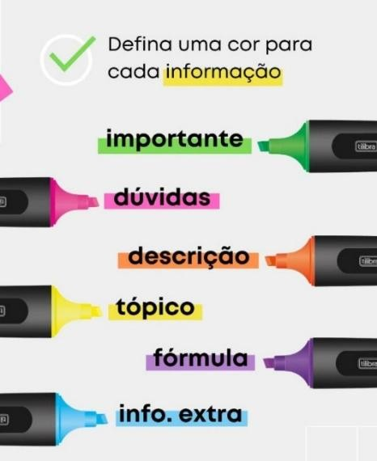
Segue abaixo um bom exemplo de anotação retirado do livro de um aluno:
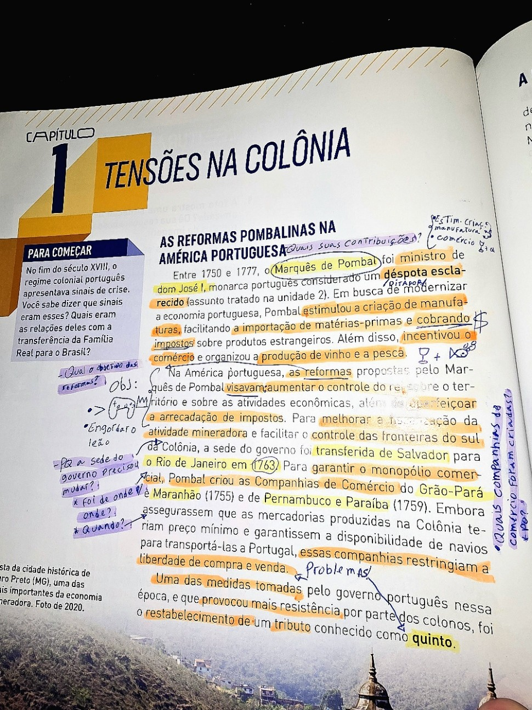
Perceba que ele criou um sistema de cores que conversa com ele e que na próxima vez que ele for abrir nessa página ele vai saber exatamente para onde olhar primeiro.
Perceba também que ele criou perguntas para forçar seu cérebro a recuperar a informação, fazendo com que ela seja reativada e dessa forma passe para a MLP (memória de longo prazo) mais facilmente.
A técnica do desenho ilustrativo também foi utilizada, dessa forma ele associa a informação com a imagem e quando ele precisar evocar aquela informação, ele apenas lembra do desenho e tudo se apresenta para ele de forma clara e que faça sentido, ocorrendo assim a reconsolidação.
Agora compare com essa imagem abaixo:
Aqui o aluno marcou o parágrafo inteiro, não comentou, não criou perguntas, não destacou nada essencial e pontual. Dessa forma, na hora da revisão fica mais difícil localizar as informações desejadas, e perde-se tempo lendo coisas que não são realmente importantes. Além de fornecer um aprendizado passivo e não tão significativo quanto poderia e deveria ser.
Esse exemplo me faz lembrar de uma cena de filme em que essa técnica é aplicada de modo eficiente. Para quem é fã dos filmes de Harry Potter, especialmente em “Harry Potter e O Enigma do Príncipe”, existem duas cenas em que fica evidente o uso desse método: o personagem Harry consulta o livro de poções e orienta seus movimentos a partir das anotações feitas por um ex-aluno, utilizando-as como referência para se sobressair aos outros alunos na aula e ganhar o prêmio prometido pelo professor.
O seu cérebro aprende melhor quando consegue relacionar novas informações com experiências concretas. O estudo reverso é um pouco contraintuitivo, pois em vez de começar pela teoria abstrata, você inicia resolvendo questões práticas. Estranho né? Mas calma que a neurociência embasa essa técnica. Esse processo ativa sua memória de trabalho e o raciocínio lógico, permitindo que você perceba rapidamente quais conteúdos são mais relevantes e quais pontos ainda não domina.
Essa técnica é especialmente eficaz para quem pretende prestar concurso público, pois foca nas questões, e treinando dessa forma você consegue ter um boa noção de como será sua prova e acertar mais questões que seus concorrentes que ficaram somente na leitura e teoria.
Porém, nem sempre essa técnica é indicada. Se você ainda está construindo as bases de disciplinas complexas — como matemática avançada ou ciências naturais — começar apenas pelas questões pode gerar frustração, já que você não terá esquemas prévios suficientes para interpretar os problemas. Nesses casos, a teoria funciona como um alicerce indispensável. É necessário bom senso e atenção ao aplicar essa técnica.
O estudo reverso funciona melhor quando você já tem uma base intermediária ou avançada. Nessas situações, as questões servem como gatilhos para revisar, consolidar e fortalecer redes neurais já existentes. Além disso, se você estiver em reta final de preparação, com pouco tempo disponível, essa técnica ajuda a direcionar sua atenção para os conteúdos mais cobrados e para suas fragilidades.
Na prática, você deve resolver questões comentadas, analisar seus erros e registrar os pontos-chave em seu material de revisão. Esse ciclo — tentativa, erro, feedback e correção — é extremamente poderoso para a neuroplasticidade, pois reforça conexões neurais e aumenta a retenção de longo prazo.
Escolha provas anteriores, listas de exercícios ou simulados da disciplina que você quer estudar. Caso não tenha nada disso, pesquise no google o assunto e exercícios comentados e comece a responder. Resolva sem consultar a teoria primeiro, para testar o que já sabe.
Depois de cada questão, veja a correção ou comentário. Identifique onde você errou: foi falta de conhecimento, distração ou dificuldade de interpretação?
Para cada erro, foque no ponto em questão do material teórico (livro, apostila ou vídeo) e estude apenas aquele ponto crítico. Isso evita gastar tempo com conteúdos que não aparecem nas provas.
Anote os conceitos que você precisou revisar e os assuntos que mais apareceram nas questões, isso servirá de guia para você focar no que realmente importa. Crie um “mapa de erros” para saber quais assuntos exigem mais atenção.
Revise suas anotações em intervalos regulares (ex.: no dia seguinte, depois de uma semana). Isso fortalece a memória de longo prazo e evita esquecer o que aprendeu. Iremos falar sobre a revisão espaçada em breve.
Matemática e afins: resolva problemas e volte à teoria só nos tópicos que errou. Verifique se você está cometendo erros em assuntos passados que você precisaria dominar para resolver questões mais avançadas. Ex: jogo de sinais, fatoração, MMC, jogo de vírgula. Esses são assuntos que precisam estar bem desenvolvidos, caso você nos exercícios esteja cometendo erros nesses ou em outros tópicos base, você deve revisá-los antes de continuar.
Decorativas em geral: faça questões de múltipla escolha e revise apenas os assuntos que sentiu mais dificuldade de entender ou memorizar.
Dica para concurseiros: consegue a vaga quem resolveu mais questões, pois quem passa na prova não é quem sabe mais, mas quem acertou mais. Fikdik 😉
Aqui está a chave do castelo do aprendizado. Preste muita atenção nessa parte!
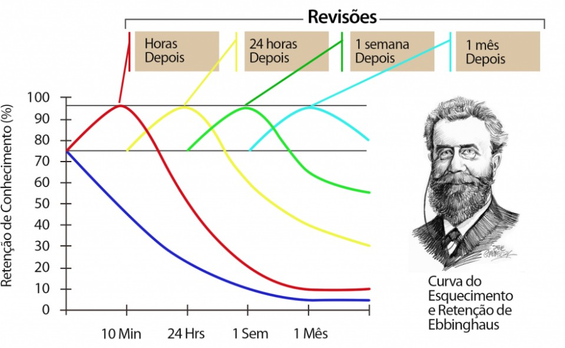
Você já percebeu que, depois de estudar um assunto, parece que ele simplesmente “desaparece” da sua cabeça? Isso não é falta de inteligência, é o funcionamento natural da memória. Esse fenômeno foi estudado por Hermann Ebbinghaus, que criou a famosa Curva do Esquecimento. Segundo ele, logo após aprender algo, você começa a esquecer rapidamente: em poucas horas, boa parte do conteúdo já se foi, e depois de um mês, pode restar menos de 25% do que você aprendeu (EBBINGHAUS, 1885/1964, p. 45).
A aprendizagem humana está intimamente ligada aos processos de memória, que envolvem codificação, armazenamento, consolidação e recuperação da informação. No entanto, muitos estudos da neurociência demonstram que, após a aquisição inicial de um conhecimento, a tendência natural é o esquecimento progressivo, pois o nosso cérebro realiza uma triagem de quais informações ele considera útil e quais serão eliminadas.
Assim, é fundamental aceder ao conhecimento previamente armazenado durante a aquisição de novos conteúdos, pois essa ligação entre o novo e o pré-existente favorece a construção de estruturas cognitivas organizadas e articuladas, numa rede conceptual que se forma a partir de associações entre conhecimentos prévios e novas informações (Ausubel, 2000).
Surge então a técnica da revisão espaçada para resolver esse problema. Ela é fundamentada no princípio de que a repetição distribuída ao longo do tempo favorece a consolidação da memória de longo prazo. Como explica Ausubel (2000, p. 172), “a repetição sistemática do contato com o conteúdo aprendido contribui para prolongar a sua retenção, assegurando uma prontidão contínua para aprendizagens subsequentes”. Essa estratégia foi aplicada em contexto escolar por Kelley e Whatson (2013), inspirada nas descobertas neurocientíficas de Fields (2005), que demonstraram a importância das pausas para a estabilização das conexões sinápticas: “memorias duradouras requerem a síntese de novas proteínas que fortalecem as conexões sinápticas”(FIELDS, 2005, p. 48). Lembra que foi dito que “Uma boa noite de sono é tão importante quanto um bom dia de estudo”? Pois é, é isso que ele está reforçando aqui.
Importante dizer aqui que existem inúmeros métodos de você realizar essa revisão, então isso é algo muito individual e é necessário você descobrir qual se encaixa melhor na sua realidade.
Montei um exemplo de plano semanal para aplicar a revisão espaçada levando em conta também que você terá várias atividades diariamente passadas pelos professores. Esse exemplo precisa ser alterado por você para se encaixar na sua realidade de vida, é apenas uma sugestão, atente-se à isso.
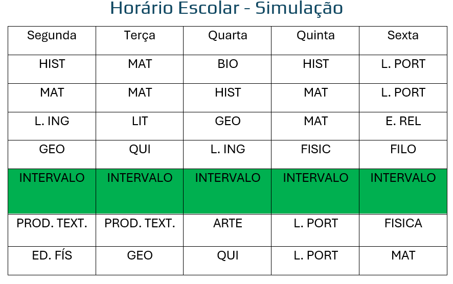
Repetição espaçada integrada às atividades diárias
⏱ 2h por dia (seg–sex) + sábado leve
PRINCÍPIO GERAL: Você estuda em casa o que teve aula no dia e revisa o que teve aula na semana passada.
Assim: nada acumula, nada é esquecido, o cérebro reconhece padrão.
ESTRUTURA FIXA DAS 2H DIÁRIAS: Todos os dias seguem o mesmo formato:
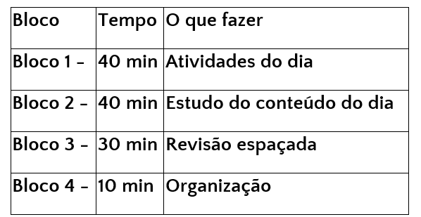
Aulas: História, Matemática, Inglês, Geografia, Produção Textual, Ed. Física
Em casa (2h)
Bloco 1 – Atividades (40 min): Matemática (20 min) | História ou Inglês (20 min)
Bloco 2 – Estudo do dia (40 min): Matemática → conteúdo novo (20 min) | Inglês → conteúdo novo (20 min)
Bloco 3 – Revisão espaçada (30 min): Ciências (conteúdo da semana passada – 15 min) | Geografia (conteúdo antigo – 15 min)
Bloco 4 – Organização (10 min): Cadernos de Matemática e Inglês
Aulas: Matemática (2x), Literatura, Química, Produção Textual, Geografia
Em casa (2h)
Bloco 1 – Atividades: Matemática (25 min) | Química (15 min)
Bloco 2 – Estudo do dia: Matemática (20 min) | Química (20 min)
Bloco 3 – Revisão espaçada: História (15 min) | Produção Textual (15 min)
Bloco 4 – Organização: Matemática e Química
Aulas: Biologia, História, Geografia, Inglês, Artes, Química
Em casa (2h)
Bloco 1 – Atividades: Biologia (20 min) | Química ou Inglês (20 min)
Bloco 2 – Estudo do dia: Biologia (20 min) | Inglês (20 min)
Bloco 3 – Revisão espaçada: Matemática (15 min) | Literatura (15 min)
Bloco 4 – Organização: Biologia
Aulas: História, Matemática, Matemática, Física, Língua Portuguesa (2x)
Em casa (2h)
Bloco 1 – Atividades: Matemática (25 min) | Física (15 min)
Bloco 2 – Estudo do dia: Matemática (20 min) | Física (20 min)
Bloco 3 – Revisão espaçada: Química (15 min) | Geografia (15 min)
Bloco 4 – Organização: Matemática
Aulas: Língua Portuguesa (2x), Ensino Religioso, Filosofia, Física, Matemática
Em casa (1h30 a 1h40)
Bloco 1 – Atividades: Língua Portuguesa (20 min) | Matemática ou Física (20 min)
Bloco 2 – Revisão geral da semana: Português / Produção Textual (15 min) | Ciências da Natureza (15 min)
Bloco 3 – Organização: Mochila + cadernos (10 min)
📌 Nada de conteúdo novo pesado na sexta.
👉 Só acontece se não tiver prova na segunda, caso tenha foque em revisar os conteúdos da prova.
Estrutura:
20 min → Matemática (semana)
15 min → Língua Portuguesa / Produção Textual
15 min → Ciências (Bio, Química ou Física – alternar)
📌 Domingo é livre.
🔁 Vantagens desse plano: Conteúdo estudado no dia da aula. Revisando: 2–3 dias depois, 1 semana depois, no sábado (visão geral).
Até agora vimos diversas técnicas de estudo, mas existe um princípio que está por trás da maioria delas. Esse princípio é conhecido como Active Recall, ou Evocação Ativa.
Embora o nome pareça complicado, a ideia é extremamente simples: em vez de apenas receber informações, você tenta recuperá-las da memória. Pense na seguinte situação: Você acabou de estudar um capítulo sobre fotossíntese. Existem duas formas de revisar esse conteúdo. A primeira é reler o capítulo várias vezes. A segunda é fechar o livro e tentar responder perguntas como: O que é fotossíntese? Onde ela acontece? Quais são suas etapas? Qual é a função da clorofila? Na primeira situação você está apenas olhando novamente para a informação. Na segunda, está obrigando seu cérebro a procurá-la na memória, e essa busca é o que justamente chamamos de Active Recall.
Muitas pessoas acreditam que aprender é colocar informações para dentro do cérebro. Na realidade, aprender é mais sobre da capacidade de recuperar essas informações quando precisamos delas. Não adianta você estudar sobre muitos assuntos e na hora de explicar sobre eles, ou de fazer uma prova você se embananar todo para desenvolver a ideia. Veremos isso na técnica de Feynman e sobre a ilusão de competência. O mais importante de tudo é você conseguir resgatar as coisas que você estudou e que sabe, e não ACHA que sabe.
Imagine que sua memória seja semelhante a uma trilha em uma floresta. Cada vez que você tenta lembrar de uma informação, você percorre essa trilha. Quanto mais vezes ela é utilizada, mais larga, visível e fácil de encontrar ela se torna.
O mesmo acontece com as conexões neurais do cérebro. Sempre que você recupera uma informação da memória, fortalece os caminhos neurais associados a ela.
Por isso, o simples ato de tentar lembrar já é uma forma de estudo muito mais efetiva do que simplesmente ler uma anotação.
Imagine que você acabou de estudar um conteúdo e pensa: “Acho que entendi”. Mas será que entendeu mesmo? A neurociência mostra que a sensação de compreensão não é um bom indicador de aprendizagem real — isso é a famosa ilusão de competência (Bjork & Bjork, 2011).
É justamente aqui que entra a Técnica de Feynman, criada pelo físico Richard Feynman, ganhador do Nobel e conhecido por transformar ideias complexas em explicações simples e brilhantes.
A essência da técnica é simples: Se você não consegue explicar algo de uma forma tão simples que até uma criança consiga entender, é porque não entendeu o suficiente.
A técnica funciona porque ativa três pilares fundamentais da aprendizagem eficaz:
Apesar de sua simplicidade, os flashcards estão entre as técnicas de aprendizagem mais utilizadas por estudantes de medicina, concurseiros, poliglotas e profissionais que precisam memorizar grandes quantidades de informação. Seu sucesso não acontece por acaso. Eles exploram dois dos mecanismos mais poderosos da aprendizagem humana: a evocação ativa (Active Recall) e a repetição espaçada (Spaced Repetition).
Flash cards são cartões de estudo compostos por duas partes: A frente, que contém uma pergunta, problema, conceito ou estímulo e o verso, contendo a resposta ou explicação correspondente.
Ao visualizar a pergunta, seu cérebro é obrigado a buscar a resposta na memória antes de verificá-la. Esse esforço de recuperação fortalece as conexões neurais associadas à informação, tornando-a mais fácil de ser lembrada futuramente.
Veja abaixo como funciona um flashcard:
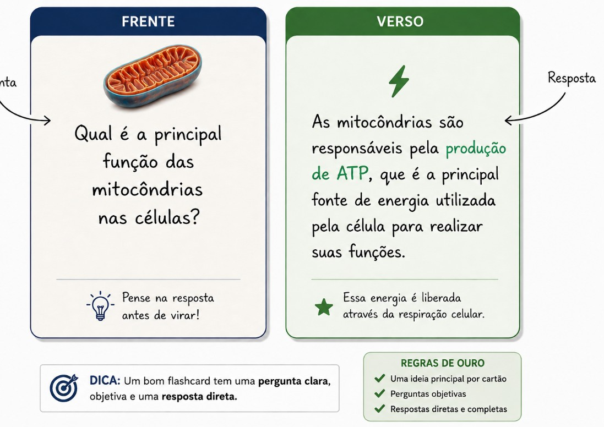
Ao visualizar a pergunta, seu cérebro é obrigado a buscar a resposta na memória antes de verificá-la. Esse esforço de recuperação fortalece as conexões neurais associadas à informação, tornando-a mais fácil de ser lembrada futuramente.
Muitas pessoas ficam frustradas ao errar uma pergunta. Na realidade, esse é justamente o momento em que o cérebro aprende mais. Quando você tenta responder e falha, cria uma lacuna evidente entre o que sabe e o que deveria saber. Ao visualizar imediatamente a resposta correta, ocorre uma correção desse erro, fortalecendo o aprendizado.
Então, não encare os erros como fracassos, ok?
Um dos maiores erros dos iniciantes é transformar os flashcards em pequenos resumos. Observe este exemplo:
Pergunta: “Explique todo o funcionamento da fotossíntese.”
Embora pareça uma boa ideia, esse cartão é excessivamente amplo. Flashcards eficientes trabalham com informações pequenas e específicas.
Uma versão melhor seria:
Pergunta: “Quais os elementos necessários para a planta realizar a fotossíntese?”
Resposta: Sol, H2O e CO2.
Quanto mais específica for a pergunta, mais eficiente tende a ser a revisão.
Abaixo deixei alguns exemplos de diferentes flashcards para você escolher o estilo que mais lhe agrada e dessa forma poder arrasar nos seus estudos:
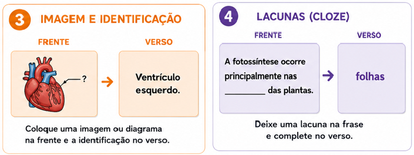
Lembra da repetição espaçada? Então, criar flashcards é apenas metade do processo. A outra metade consiste em revisá-los nos momentos corretos.
O princípio é simples: Quanto melhor você conhece uma informação, maior pode ser o intervalo até a próxima revisão. Exemplo de organização das revisões dos cards:
Esse sistema acompanha o funcionamento natural da memória e reduz drasticamente o tempo necessário para manter um conhecimento vivo.
Os flashcards podem ser feitos tanto em papel quanto em aplicativos.
Os cartões físicos possuem a vantagem da simplicidade e da facilidade de criação. Porém temos também um software magnífico feito especificamente para ajudar estudantes a memorizar qualquer informação de forma dinâmica e eficiente, lhe apresento o NOJI!
O NOJI é um programa de flashcards que utiliza princípios da ciência da aprendizagem para ajudar estudantes a lembrar de informações por períodos muito mais longos. Seu diferencial está em não mostrar todos os cartões de forma aleatória. Em vez disso, o programa calcula automaticamente quais conteúdos precisam ser revisados e quando cada revisão deve acontecer.
Imagine que você acabou de aprender uma palavra nova em inglês. Se você a revisar no momento certo, pouco antes de esquecê-la, seu cérebro fortalece aquela memória. A cada nova revisão, o intervalo entre os estudos pode aumentar. O NOJI faz exatamente esse trabalho de organização, permitindo que você se concentre em aprender, enquanto o programa cuida do cronograma de revisões.
Uma das grandes vantagens dessa ferramenta é a economia de tempo. Em vez de revisar todo o conteúdo repetidamente, o estudante dedica mais atenção aos assuntos que ainda não domina e menos aos que já conhece bem. Isso torna o estudo mais eficiente e evita a sensação de estar sempre recomeçando do zero.
Outra característica importante é a flexibilidade. Os cartões podem conter textos, imagens, gráficos, áudios e até vídeos. Um estudante de inglês pode criar cartões com palavras e pronúncias; um estudante de Biologia pode utilizar imagens de células, órgãos ou sistemas do corpo humano; já um estudante de História pode revisar datas, acontecimentos e personagens importantes. As possibilidades são praticamente ilimitadas. Baixe ele e descubra as funcionalidades dele, ou assista vídeos explicativos sobre ele e aprenda através de dicas de outros usuários, vale a pena.
Durante muito tempo, acreditou-se que a melhor forma de estudar era dedicar várias horas seguidas a um único assunto até dominá-lo completamente. Embora essa estratégia pareça intuitiva, pesquisas na área da aprendizagem mostram que existe uma técnica frequentemente mais eficaz para a retenção de longo prazo: a Leitura Intercalada, também conhecida como Interleaving.
A leitura intercalada consiste em alternar entre diferentes tópicos ou disciplinas durante uma mesma sessão de estudos, em vez de permanecer focado em apenas um único assunto por longos períodos. Em vez de estudar três horas seguidas de Biologia, por exemplo, o estudante poderia dividir esse tempo entre Biologia, Química e Inglês. Segue abaixo um exemplo de como você poderia fazer para utilizar essa técnica em seus estudos:
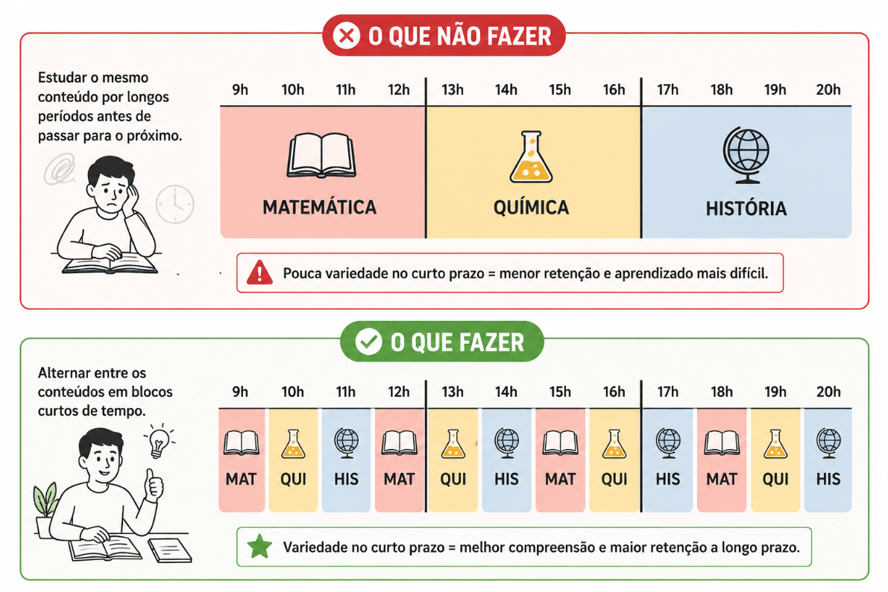
À primeira vista, essa abordagem pode parecer confusa e contraintuitiva. Muitos estudantes têm a sensação de que estão aprendendo menos quando alternam assuntos. Entretanto, essa impressão é enganosa. O cérebro gosta de desafios e tende a aprender melhor quando precisa distinguir conceitos semelhantes e alternar entre diferentes formas de raciocínio.
Imagine um jogador de futebol treinando apenas cobranças de falta durante quatro horas seguidas. Certamente ele melhorará naquele fundamento específico. Porém, durante uma partida real, ele precisará alternar constantemente entre passes, marcação, finalizações, posicionamento e tomada de decisões. O aprendizado real acontece justamente nessa capacidade de adaptação. O mesmo ocorre nos estudos.
O pesquisador Robert Bjork, uma das maiores referências mundiais em aprendizagem, explica que muitas vezes as estratégias que parecem mais difíceis durante o estudo são justamente as que produzem os melhores resultados no futuro. Ele chama esse fenômeno de "dificuldades desejáveis". Segundo Bjork, quando o cérebro precisa se esforçar mais para recuperar uma informação, essa informação tende a ser armazenada de forma mais forte e duradoura.
Segundo pesquisas realizadas por Rohrer e Pashler (2010), alternar conteúdos durante o estudo ajuda o cérebro a diferenciar conceitos parecidos e a escolher com mais facilidade qual conhecimento utilizar diante de um problema. Em outras palavras, o estudante não aprende apenas a repetir informações, mas aprende a pensar sobre elas e a decidir quando e como utilizá-las.
Isso acontece porque o cérebro é constantemente desafiado a recuperar informações diferentes da memória. Cada vez que você muda de assunto e depois em pouco tempo retorna para ele, precisa resgatar novamente o conhecimento armazenado (repetição espaçada). Esse esforço mental fortalece as conexões neurais e melhora a retenção do conteúdo a longo prazo.
Outro estudo importante, realizado por Kornell e Bjork (2008), mostrou que estudantes que alternavam diferentes conteúdos conseguiam identificar padrões e aplicar seus conhecimentos com muito mais facilidade do que aqueles que estudavam um único tema por vez. Isso demonstra que a intercalação não apenas melhora a memória, mas também aumenta a capacidade de raciocínio e resolução de problemas.
Somado a isso, Dunlosky e colaboradores (2013), após analisarem diversas técnicas de estudo, concluíram que a prática intercalada é uma das estratégias mais promissoras para melhorar a aprendizagem, especialmente quando combinada com outras técnicas de estudo ativo, como a revisão espaçada e o active recall (resgatar a informação diretamente do próprio cérebro, sem consultar nenhum material de apoio).
A Técnica Pomodoro é um método de gerenciamento do tempo criado pelo italiano Francesco Cirillo no final da década de 1980. Seu objetivo é aumentar a concentração, reduzir a procrastinação e tornar o estudo mais produtivo por meio da alternância entre períodos de foco intenso e pequenas pausas.
O nome "Pomodoro" vem da palavra italiana para tomate. Cirillo utilizava um cronômetro de cozinha em formato de tomate para controlar seus períodos de estudo, e o método acabou recebendo esse nome.
A ideia é simples: o cérebro humano não mantém níveis máximos de atenção por longos períodos sem sofrer fadiga. Quando estudamos durante horas seguidas sem descanso, a concentração diminui gradualmente, os erros aumentam e a retenção das informações tende a cair (lembra da importância do descanso para o aprendizado que falamos no começo? Pois é, ela entra aqui também). A Técnica Pomodoro procura resolver esse problema dividindo o estudo em blocos menores e mais administráveis.
O método tradicional segue quatro etapas:
Após completar quatro ciclos de 25 minutos, realiza-se uma pausa mais longa, geralmente entre 15 e 30 minutos.
Um ciclo pode ser representado da seguinte forma:
Durante os 25 minutos de estudo, o ideal é eliminar distrações, como redes sociais, mensagens e interrupções desnecessárias. O objetivo é dedicar toda a atenção à atividade escolhida.
Apenas o fato de ter lido este livro até o final já demonstra algo importante: você decidiu investir em si mesmo. Em um mundo cheio de distrações, onde a atenção se tornou um dos recursos mais disputados da atualidade, dedicar tempo para aprender a aprender é uma atitude rara e extremamente valiosa.
Ao longo destas páginas, exploramos como o cérebro aprende, como a memória funciona, quais fatores favorecem ou prejudicam a aprendizagem e quais técnicas possuem respaldo científico para melhorar a retenção e a compreensão do conhecimento. Falamos sobre mindset, motivação, revisão espaçada, Active Recall, Técnica de Feynman, Flashcards, Leituras Intercaladas, Pomodoro e diversas outras estratégias capazes de transformar completamente a forma como você estuda.
Mas agora quero lhe contar um segredo. Nenhuma dessas técnicas possui qualquer valor se permanecer apenas neste livro. O conhecimento só se transforma em sabedoria quando é colocado em prática. Muitas pessoas leem livros sobre produtividade e continuam improdutivas. Assistem vídeos sobre exercícios físicos e continuam sedentárias. Estudam sobre alimentação saudável e continuam se alimentando mal. O problema não está na falta de conhecimento. O problema está na falta de aplicação. Por isso, minha principal recomendação é simples: Comece!
Não espere a segunda-feira. Não espere o próximo semestre. Não espere comprar o caderno perfeito, o tablet ideal ou encontrar o ambiente de estudo dos sonhos.
Comece com o que você tem e onde você está. Escolha apenas uma técnica apresentada neste livro e pratique-a durante alguns dias. Depois adicione uma segunda. Em seguida uma terceira. Pequenas mudanças consistentes produzem resultados extraordinários ao longo do tempo.
Outra recomendação importante é que você desenvolva o hábito da curiosidade. Nunca pare de fazer perguntas. Questione, investigue, pesquise, experimente e teste novas formas de aprender. O conhecimento humano está em constante evolução, e aqueles que mantêm uma postura de aprendiz permanente possuem uma enorme vantagem em qualquer área da vida.
Também recomendo que você não tenha medo de errar. O erro não é o oposto do aprendizado; ele faz parte dele. Cada dúvida esclarecida, cada exercício errado corrigido e cada dificuldade superada representam um passo adiante no seu desenvolvimento.
Lembre-se de que aprender não é uma corrida contra outras pessoas. Não se compare com colegas, amigos ou profissionais mais experientes. Compare-se apenas com a pessoa que você era ontem. Se hoje você sabe um pouco mais, compreende um pouco melhor ou executa uma habilidade com mais qualidade, então você já está avançando na direção correta.
Proteja seu tempo. Cuide da sua saúde física e mental. Durma bem. Faça pausas quando necessário. Seu cérebro é sua ferramenta mais valiosa, e assim como qualquer equipamento de alta performance, ele precisa de manutenção adequada para funcionar no seu máximo potencial.
Por fim, jamais permita que alguém diga que você não é capaz de aprender algo. A história da humanidade é construída por pessoas que decidiram enfrentar desafios aparentemente impossíveis e persistiram até dominá-los. Você possui um cérebro extraordinário, dotado de uma capacidade impressionante de adaptação e crescimento. Talvez você não saiba tudo hoje, mas pode aprender praticamente qualquer coisa se utilizar as estratégias corretas e persistir por tempo suficiente.
Espero sinceramente que este livro tenha contribuído para sua jornada e que as ideias apresentadas aqui o acompanhem por muitos anos.
Agora o próximo capítulo não está mais nestas páginas, ele será escrito por você. Boa sorte nos seus estudos, continue aprendendo e nunca perca a curiosidade.
O futuro pertence àqueles que nunca param de aprender.
ADER, K.; HARDT, O. A single standard for memory: The case for reconsolidation. Nature Reviews Neuroscience, 2009.
AUSUBEL, David Paul. Aquisição e retenção de conhecimentos: uma perspectiva cognitiva. Lisboa: Plátano, 2000.
BJORK, R. A.; BJORK, E. L. Making things hard on yourself, but in a good way: Creating desirable difficulties to enhance learning. Psychology and the Real World, 2011.
BRETAS, Alex. Mapas mentais (Kit Fora da Caixa). Educação Fora da Caixa, Medium, 22 jun. 2015. Disponível em: <https://medium.com/educa%C3%A7%C3%A3o-fora-da-caixa/mapas-mentais-kit-fora-da-caixa-e1058c1a6677>. Acesso em: 4 dez. 2025.
DICA ORGANIZADA. Organização. Disponível em: <https://dicaorganizada.com.br/organizacao/1978/>. Acesso em: 5 dez. 2025.
DEHAENE, Stanislas. É Assim que Aprendemos: Por que o Cérebro Funciona Melhor do que Qualquer Máquina (Ainda…). São Paulo: Editora Contexto, 2022.
DUNLOSKY, John et al. Improving Students' Learning with Effective Learning Techniques. Psychological Science in the Public Interest, v. 14, n. 1, p. 4–58, 2013.
DWECK, Carol S. Mindset: A Nova Psicologia do Sucesso. São Paulo: Objetiva, 2017.
EBBINGHAUS, Hermann. Memory: A Contribution to Experimental Psychology. New York: Dover Publications, 1964. (Original publicado em 1885).
FIELDS, R. Douglas. Making Memories Stick. Scientific American, v. 292, n. 2, p. 46-53, 2005.
GLADWELL, Malcolm. Fora de Série: Outliers. Rio de Janeiro: Sextante, 2008.
GRANJEIRO, Gabriel. Curva do Esquecimento e Retenção de Ebbinghaus. 2017. Ilustração (gráfico). Desmontando a curva do esquecimento. Gran Cursos Online. Disponível em: <https://blog.grancursosonline.com.br/desmontando-curva-do-esquecimento>. Acesso em: 15 dez. 2025.
IZQUIERDO, Iván. Memória. Porto Alegre: ARTMED, 2002.
KARPICKE, J. D.; BLUNT, J. R. Retrieval practice produces more learning than elaborative studying. Science, v. 331, p. 772-775, 2011.
KELLEY, Paul; WHATSON, John. Making long-term memories in minutes: a spaced learning pattern from memory research in education. Frontiers in Human Neuroscience, v. 7, p. 589, 2013.
KORNELL, Nate; BJORK, Robert A. Learning Concepts and Categories: Is Spacing the Enemy of Induction? Psychological Science, v. 19, n. 6, p. 585–592, 2008.
LEDOUX, Joseph. Synaptic Self: How Our Brains Become Who We Are. New York: Penguin Books, 2012.
MARANO, Giuseppe et al. The Neuroscience Behind Writing: Handwriting vs. Typing—Who Wins the Battle? Life, v. 15, n. 3, p. 345, 2025. DOI: https://doi.org/10.3390/life15030345.
MARZANO, Robert J. Keys to Classroom Management. Alexandria, VA: Association for Supervision and Curriculum Development, 2003.
MEI, B. et al. NMDA Receptors Are Not Required for Pattern Completion During Associative Memory Recall. PLoS ONE, v. 6, n. 4, p. e19326, 29 abr. 2011.
PAULSON, S., Aciman, A., LeDoux, J., Schacter, D. and Winter, A. The mystery of memory: in search of the past. Ann. N.Y. Acad. Sci., 1303: 36-55, 2013.
PAVLOV, Ivan P. Conditioned Reflexes: An Investigation of the Physiological Activity of the Cerebral Cortex. Oxford University Press, 1927.
ROSA, Jessica. A dependência de estado na extinção de memória aversiva: participação do núcleo do trato solitário, hipocampo e amígdala. 2014. 98 f. Dissertação (Mestrado em Medicina e Ciências da Saúde) - Pontifícia Universidade Católica do Rio Grande do Sul, Porto Alegre, 2014.
TILIBRA EXPRESS. Color code nos estudos: entenda o que é e como aplicar! Disponível em: <https://blog.tilibraexpress.com.br/color-code-estudos/>. Acesso em: 10 dez. 2025.
UNIFOA. O que é estudo ativo e como aplicar?. UniFOA Blog, 2023. Disponível em: <https://www.unifoa.edu.br/blog/o-que-e-estudo-ativo-e-como-aplicar/>. Acesso em: 27 nov. 2025.
ROHRER, Doug; PASHLER, Harold. Recent Research on Human Learning Challenges Conventional Instructional Strategies. Educational Researcher, v. 39, n. 5, p. 406–412, 2010.
OPENAI. ChatGPT. Ferramenta de inteligência artificial utilizada para geração de textos e imagens do livro. Disponível em: ChatGPT. Acesso em: jun. 2026.
Walter Santos é professor, formador de professores e pesquisador independente nas áreas de neurociência, memória e aprendizagem. Apaixonado pelo estudo da aprendizagem humana, atua há mais de uma década na educação, lecionando para alunos do Ensino Fundamental, Ensino Médio e cursos de idiomas, experiência que lhe permitiu observar de perto as principais dificuldades enfrentadas pelos estudantes dentro e fora da sala de aula.
Especialista em Neuroeducação e em Educação 4.0, dedica-se a estudar como o cérebro aprende e de que forma descobertas da neurociência podem ser transformadas em estratégias práticas para melhorar o desempenho acadêmico. Seu trabalho busca aproximar a ciência da realidade dos estudantes, traduzindo conceitos complexos em métodos simples, acessíveis e baseados em evidências.
Ao longo de sua carreira, percebeu que a maior dificuldade de muitos alunos não está na falta de aptidão para uma ou outra área, mas na ausência de orientação sobre como estudar de maneira eficiente. Foi dessa constatação que surgiu a motivação para escrever este livro.
Mais do que apresentar técnicas de estudo, o autor acredita que aprender é uma habilidade que pode ser desenvolvida por qualquer pessoa. Seu propósito é ajudar estudantes a assumirem o protagonismo da própria aprendizagem parando de terceirizá-las para os professores, construindo hábitos de estudo mais eficazes, autonomia intelectual e confiança para alcançar seus objetivos acadêmicos e profissionais.
Este livro representa a união entre sua experiência em sala de aula, sua formação em Neuroeducação e seu compromisso em tornar o conhecimento científico útil, prático e aplicável à vida de quem deseja aprender melhor.